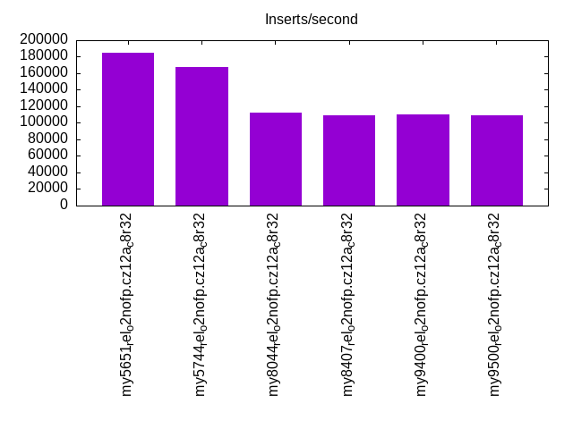
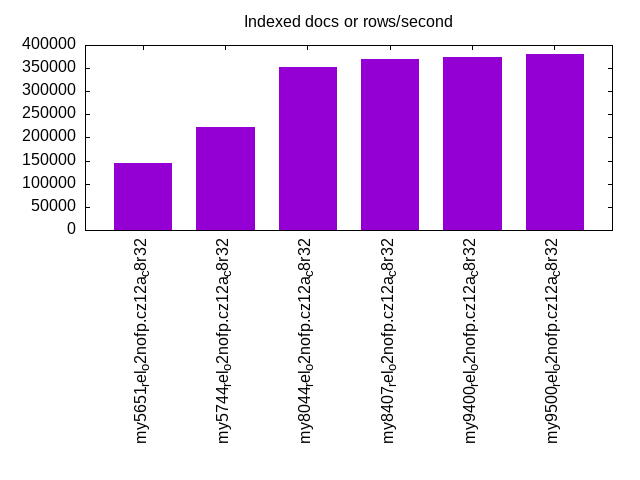
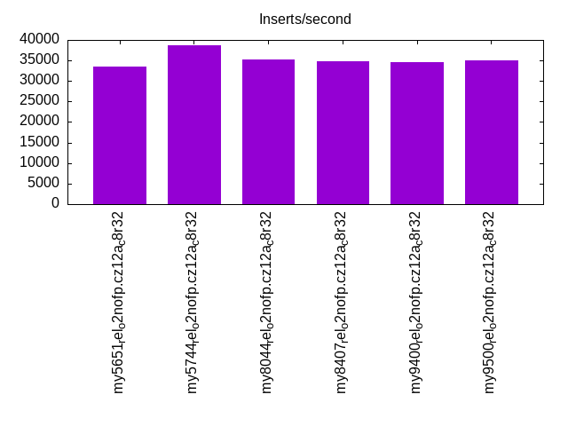
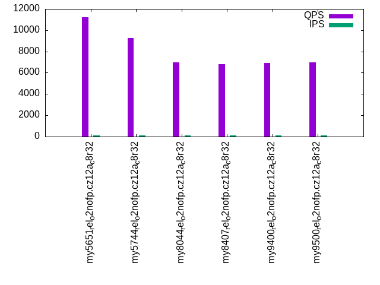
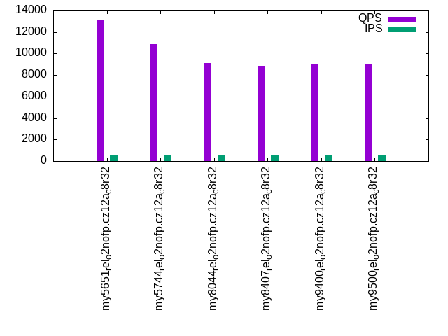
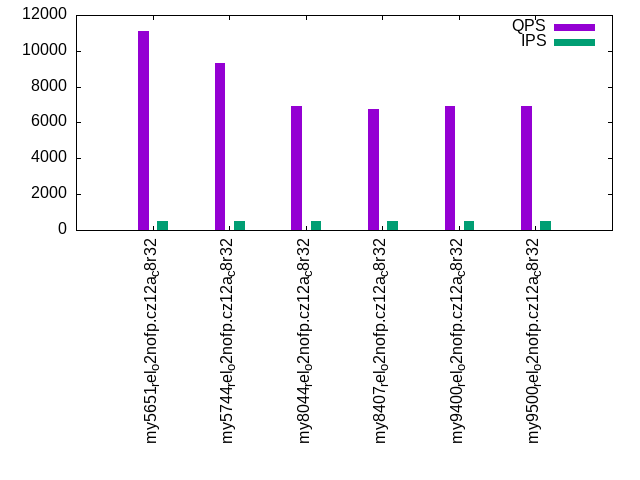
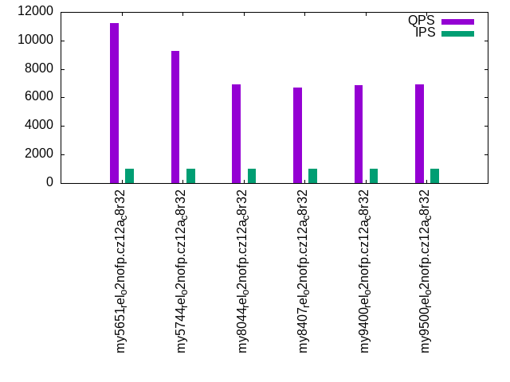

Introduction
This is a report for the insert benchmark with 30M docs and 1 client(s). It is generated by scripts (bash, awk, sed) and Tufte might not be impressed. An overview of the insert benchmark is here and a short update is here. Below, by DBMS, I mean DBMS+version.config. An example is my8020.c10b40 where my means MySQL, 8020 is version 8.0.20 and c10b40 is the name for the configuration file.
The test server has 8 AMD cores, 32G RAM and an NVMe device for the database. The benchmark was run with 1 client and there were 1 or 3 connections per client (1 for queries or inserts without rate limits, 1+1 for rate limited inserts+deletes). It uses 1 table with a table per client. It loads 30M rows per table without secondary indexes, creates 3 secondary indexes per table, then inserts 40m+10m rows per table with a delete per insert to avoid growing the table. It then does 6 read+write tests for 1800s each that do queries as fast as possible with 100,100,500,500,1000,1000 inserts/s and the same for deletes/s per client concurrent with the queries. The database is cached by InnoDB. Clients and the DBMS share one server.
The tested DBMS are:
- my5651_rel_o2nofp.cz12a_c8r32 - MySQL 5.6.51 with the cz12a_c8r32 config
- my5744_rel_o2nofp.cz12a_c8r32 - MySQL 5.7.44 with the cz12a_c8r32 config
- my8044_rel_o2nofp.cz12a_c8r32 - MySQL 8.0.44 with the cz12a_c8r32 config
- my8407_rel_o2nofp.cz12a_c8r32 - MySQL 8.4.7 with the cz12a_c8r32 config
- my9400_rel_o2nofp.cz12a_c8r32 - MySQL 9.4.0 with the cz12a_c8r32 config
- my9500_rel_o2nofp.cz12a_c8r32 - MySQL 9.5.0 with the cz12a_c8r32 config
Contents
- Summary
- l.i0: load without secondary indexes
- l.x: create secondary indexes
- l.i1: continue load after secondary indexes created with 50 inserts per transaction
- l.i2: continue load after secondary indexes created with 5 inserts per transaction
- qr100.L1: range queries with 100 insert/s per client
- qp100.L2: point queries with 100 insert/s per client
- qr500.L3: range queries with 500 insert/s per client
- qp500.L4: point queries with 500 insert/s per client
- qr1000.L5: range queries with 1000 insert/s per client
- qp1000.L6: point queries with 1000 insert/s per client
Summary
The numbers are inserts/s for l.i0, l.i1 and l.i2, indexed docs (or rows) /s for l.x and queries/s for qr100, qp100 thru qr1000, qp1000" The values are the average rate over the entire test for inserts (IPS) and queries (QPS). The range of values for IPS and QPS is split into 3 parts: bottom 25%, middle 50%, top 25%. Values in the bottom 25% have a red background, values in the top 25% have a green background and values in the middle have no color. A gray background is used for values that can be ignored because the DBMS did not sustain the target insert rate. Red backgrounds are not used when the minimum value is within 80% of the max value.
| dbms | l.i0 | l.x | l.i1 | l.i2 | qr100 | qp100 | qr500 | qp500 | qr1000 | qp1000 |
|---|---|---|---|---|---|---|---|---|---|---|
| my5651_rel_o2nofp.cz12a_c8r32 | 185185 | 145632 | 33473 | 23419 | 13136 | 11193 | 13110 | 11124 | 13020 | 11214 |
| my5744_rel_o2nofp.cz12a_c8r32 | 167598 | 222223 | 38797 | 25510 | 10838 | 9291 | 10885 | 9346 | 10864 | 9255 |
| my8044_rel_o2nofp.cz12a_c8r32 | 111940 | 352942 | 35180 | 20284 | 9128 | 6986 | 9132 | 6943 | 9097 | 6943 |
| my8407_rel_o2nofp.cz12a_c8r32 | 108696 | 370372 | 34752 | 20040 | 8874 | 6800 | 8884 | 6744 | 8768 | 6689 |
| my9400_rel_o2nofp.cz12a_c8r32 | 109890 | 375001 | 34632 | 20121 | 9022 | 6932 | 9024 | 6901 | 9101 | 6886 |
| my9500_rel_o2nofp.cz12a_c8r32 | 108696 | 379748 | 35026 | 19881 | 9046 | 6950 | 8992 | 6926 | 8965 | 6923 |
This table has relative throughput, throughput for the DBMS relative to the DBMS in the first line, using the absolute throughput from the previous table. Values less than 0.95 have a yellow background. Values greater than 1.05 have a blue background.
| dbms | l.i0 | l.x | l.i1 | l.i2 | qr100 | qp100 | qr500 | qp500 | qr1000 | qp1000 |
|---|---|---|---|---|---|---|---|---|---|---|
| my5651_rel_o2nofp.cz12a_c8r32 | 1.00 | 1.00 | 1.00 | 1.00 | 1.00 | 1.00 | 1.00 | 1.00 | 1.00 | 1.00 |
| my5744_rel_o2nofp.cz12a_c8r32 | 0.91 | 1.53 | 1.16 | 1.09 | 0.83 | 0.83 | 0.83 | 0.84 | 0.83 | 0.83 |
| my8044_rel_o2nofp.cz12a_c8r32 | 0.60 | 2.42 | 1.05 | 0.87 | 0.69 | 0.62 | 0.70 | 0.62 | 0.70 | 0.62 |
| my8407_rel_o2nofp.cz12a_c8r32 | 0.59 | 2.54 | 1.04 | 0.86 | 0.68 | 0.61 | 0.68 | 0.61 | 0.67 | 0.60 |
| my9400_rel_o2nofp.cz12a_c8r32 | 0.59 | 2.57 | 1.03 | 0.86 | 0.69 | 0.62 | 0.69 | 0.62 | 0.70 | 0.61 |
| my9500_rel_o2nofp.cz12a_c8r32 | 0.59 | 2.61 | 1.05 | 0.85 | 0.69 | 0.62 | 0.69 | 0.62 | 0.69 | 0.62 |
This lists the average rate of inserts/s for the tests that do inserts concurrent with queries. For such tests the query rate is listed in the table above. The read+write tests are setup so that the insert rate should match the target rate every second. Cells that are not at least 95% of the target have a red background to indicate a failure to satisfy the target.
| dbms | qr100.L1 | qp100.L2 | qr500.L3 | qp500.L4 | qr1000.L5 | qp1000.L6 |
|---|---|---|---|---|---|---|
| my5651_rel_o2nofp.cz12a_c8r32 | 100 | 100 | 500 | 500 | 999 | 999 |
| my5744_rel_o2nofp.cz12a_c8r32 | 100 | 100 | 500 | 500 | 1000 | 1000 |
| my8044_rel_o2nofp.cz12a_c8r32 | 100 | 100 | 500 | 500 | 1000 | 1000 |
| my8407_rel_o2nofp.cz12a_c8r32 | 100 | 100 | 500 | 500 | 999 | 999 |
| my9400_rel_o2nofp.cz12a_c8r32 | 100 | 100 | 500 | 500 | 999 | 999 |
| my9500_rel_o2nofp.cz12a_c8r32 | 100 | 100 | 500 | 500 | 1000 | 1000 |
| target | 100 | 100 | 500 | 500 | 1000 | 1000 |
l.i0
l.i0: load without secondary indexes. Graphs for performance per 1-second interval are here.
Average throughput:
Insert response time histogram: each cell has the percentage of responses that take <= the time in the header and max is the max response time in seconds. For the max column values in the top 25% of the range have a red background and in the bottom 25% of the range have a green background. The red background is not used when the min value is within 80% of the max value.
| dbms | 256us | 1ms | 4ms | 16ms | 64ms | 256ms | 1s | 4s | 16s | gt | max |
|---|---|---|---|---|---|---|---|---|---|---|---|
| my5651_rel_o2nofp.cz12a_c8r32 | 99.719 | 0.225 | 0.050 | 0.005 | 0.001 | 0.127 | |||||
| my5744_rel_o2nofp.cz12a_c8r32 | 99.717 | 0.094 | 0.108 | 0.080 | 0.001 | 0.130 | |||||
| my8044_rel_o2nofp.cz12a_c8r32 | 99.503 | 0.304 | 0.080 | 0.112 | 0.001 | 0.074 | |||||
| my8407_rel_o2nofp.cz12a_c8r32 | 99.501 | 0.306 | 0.086 | 0.106 | 0.002 | 0.073 | |||||
| my9400_rel_o2nofp.cz12a_c8r32 | 99.496 | 0.311 | 0.079 | 0.113 | 0.002 | 0.074 | |||||
| my9500_rel_o2nofp.cz12a_c8r32 | 99.436 | 0.368 | 0.071 | 0.124 | 0.002 | 0.088 |
Performance metrics for the DBMS listed above. Some are normalized by throughput, others are not. Legend for results is here.
ips qps rps rmbps wps wmbps rpq rkbpq wpi wkbpi csps cpups cspq cpupq dbgb1 dbgb2 rss maxop p50 p99 tag 185185 0 1620 6.3 474.8 45.4 0.009 0.035 0.003 0.251 24151 20.2 0.130 9 2.0 32.5 3.5 0.127 185678 163682 my5651_rel_o2nofp.cz12a_c8r32 167598 0 0 0.0 510.9 43.1 0.000 0.000 0.003 0.263 19318 20.1 0.115 10 2.0 32.5 4.0 0.130 167876 149588 my5744_rel_o2nofp.cz12a_c8r32 111940 0 0 0.0 412.3 31.9 0.000 0.000 0.004 0.292 13853 17.2 0.124 12 2.0 32.6 4.3 0.074 112584 103785 my8044_rel_o2nofp.cz12a_c8r32 108696 0 0 0.0 402.0 31.0 0.000 0.000 0.004 0.292 13496 17.3 0.124 13 2.0 34.0 4.2 0.073 109183 100887 my8407_rel_o2nofp.cz12a_c8r32 109890 0 0 0.0 406.4 31.4 0.000 0.000 0.004 0.293 13646 17.2 0.124 13 2.0 34.0 4.3 0.074 110686 101484 my9400_rel_o2nofp.cz12a_c8r32 108696 0 0 0.0 418.0 31.7 0.000 0.000 0.004 0.299 14430 17.3 0.133 13 2.0 34.0 4.4 0.088 109283 100784 my9500_rel_o2nofp.cz12a_c8r32
Average values from iostat.
r/s rkB/s rrqm/s %rrqm r_await rareq-s w/s wkB/s wrqm/s %wrqm w_await wareq-s d/s dkB/s drqm/s %drqm d_await dareq-s f/s f_await aqu-sz %util 1620.4 6481.7 0.000 0.000 0.040 4.000 481.4 46933.6 8.026 1.900 0.196 111.9 0.413 9.600 0.000 0.000 0.068 3.757 1.303 1.145 0.150 9.921 my5651_rel_o2nofp.cz12a_c8r32 0.159 0.635 0.000 0.000 2.993 2.235 517.2 44483.9 18.74 3.777 2.141 86.85 0.318 6.047 0.000 0.000 0.097 2.800 4.471 1.286 1.006 6.250 my5744_rel_o2nofp.cz12a_c8r32 0.096 0.385 0.000 0.000 2.183 1.692 415.7 32873.9 20.88 5.163 2.495 80.91 0.123 3.815 0.000 0.000 0.156 7.192 4.523 1.362 0.969 5.443 my8044_rel_o2nofp.cz12a_c8r32 0.089 0.356 0.000 0.000 1.278 1.407 405.1 31916.4 18.90 4.829 2.628 80.46 0.081 2.963 0.000 0.000 0.114 7.728 4.485 1.299 0.985 5.379 my8407_rel_o2nofp.cz12a_c8r32 0.098 0.392 0.000 0.000 1.755 1.736 409.8 32373.7 19.48 4.856 2.626 80.92 0.143 2.294 0.000 0.000 0.098 2.830 4.491 1.360 0.994 5.531 my9400_rel_o2nofp.cz12a_c8r32 0.111 0.622 0.000 0.000 1.481 2.148 421.2 32674.0 20.58 5.158 2.589 80.33 0.133 1.793 0.000 0.000 0.147 2.522 4.585 1.401 1.010 5.523 my9500_rel_o2nofp.cz12a_c8r32
l.x
l.x: create secondary indexes.
Average throughput:
Performance metrics for the DBMS listed above. Some are normalized by throughput, others are not. Legend for results is here.
ips qps rps rmbps wps wmbps rpq rkbpq wpi wkbpi csps cpups cspq cpupq dbgb1 dbgb2 rss maxop p50 p99 tag 145632 0 32 0.1 2360.6 158.2 0.000 0.001 0.016 1.113 1939 10.7 0.013 6 4.2 34.7 5.1 0.002 NA NA my5651_rel_o2nofp.cz12a_c8r32 222223 0 0 0.0 3539.9 221.6 0.000 0.000 0.016 1.021 9583 12.1 0.043 4 4.6 35.1 5.5 0.001 NA NA my5744_rel_o2nofp.cz12a_c8r32 352942 0 1 0.0 10021.1 448.8 0.000 0.000 0.028 1.302 22641 41.9 0.064 9 4.5 35.1 4.8 0.001 NA NA my8044_rel_o2nofp.cz12a_c8r32 370372 0 1 0.0 11512.3 473.5 0.000 0.000 0.031 1.309 25409 40.9 0.069 9 4.5 36.5 5.0 0.001 NA NA my8407_rel_o2nofp.cz12a_c8r32 375001 0 1 0.0 12002.3 481.3 0.000 0.000 0.032 1.314 25695 39.9 0.069 9 4.5 36.5 5.1 0.002 NA NA my9400_rel_o2nofp.cz12a_c8r32 379748 0 1 0.0 10966.2 484.7 0.000 0.000 0.029 1.307 24664 41.3 0.065 9 4.5 36.5 5.4 0.002 NA NA my9500_rel_o2nofp.cz12a_c8r32
Average values from iostat.
r/s rkB/s rrqm/s %rrqm r_await rareq-s w/s wkB/s wrqm/s %wrqm w_await wareq-s d/s dkB/s drqm/s %drqm d_await dareq-s f/s f_await aqu-sz %util 32.62 130.5 0.000 0.000 0.036 2.800 2120.5 156846 151.9 5.927 0.213 82.41 0.530 6156.9 0.000 0.000 0.021 684.9 51.80 1.102 0.541 28.50 my5651_rel_o2nofp.cz12a_c8r32 0.232 0.928 0.000 0.000 0.048 1.920 3441.9 228121 20.89 0.668 0.080 106.0 0.976 9852.8 0.000 0.000 0.058 957.7 5.000 1.358 0.203 7.647 my5744_rel_o2nofp.cz12a_c8r32 0.867 12.80 0.000 0.000 0.054 14.56 9529.0 476104 45.75 2.509 0.083 79.57 10.15 64985.5 0.000 0.000 0.191 1803.5 10.93 1.377 0.355 22.99 my8044_rel_o2nofp.cz12a_c8r32 1.293 26.07 0.000 0.000 0.076 25.86 11103.3 501134 45.78 2.211 0.071 73.29 10.46 64889.6 0.000 0.000 0.275 2389.0 10.96 1.436 0.369 23.44 my8407_rel_o2nofp.cz12a_c8r32 1.080 24.80 0.000 0.000 0.119 27.48 11648.0 509901 44.91 2.203 0.071 71.53 10.47 64999.8 0.000 0.000 0.313 1837.1 10.95 1.402 0.381 24.91 my9400_rel_o2nofp.cz12a_c8r32 1.142 18.50 0.000 0.000 0.075 23.34 10519.2 516824 49.45 2.475 0.080 76.85 11.45 69515.8 0.000 0.000 0.375 2191.5 11.54 1.474 0.393 24.16 my9500_rel_o2nofp.cz12a_c8r32
l.i1
l.i1: continue load after secondary indexes created with 50 inserts per transaction. Graphs for performance per 1-second interval are here.
Average throughput:
Insert response time histogram: each cell has the percentage of responses that take <= the time in the header and max is the max response time in seconds. For the max column values in the top 25% of the range have a red background and in the bottom 25% of the range have a green background. The red background is not used when the min value is within 80% of the max value.
| dbms | 256us | 1ms | 4ms | 16ms | 64ms | 256ms | 1s | 4s | 16s | gt | max |
|---|---|---|---|---|---|---|---|---|---|---|---|
| my5651_rel_o2nofp.cz12a_c8r32 | 10.762 | 87.330 | 1.760 | 0.148 | nonzero | 0.081 | |||||
| my5744_rel_o2nofp.cz12a_c8r32 | 19.701 | 79.770 | 0.499 | 0.029 | 0.001 | 0.086 | |||||
| my8044_rel_o2nofp.cz12a_c8r32 | 99.376 | 0.556 | 0.067 | 0.001 | nonzero | 0.318 | |||||
| my8407_rel_o2nofp.cz12a_c8r32 | 99.355 | 0.578 | 0.066 | 0.001 | nonzero | 0.321 | |||||
| my9400_rel_o2nofp.cz12a_c8r32 | 99.352 | 0.579 | 0.068 | 0.001 | nonzero | 0.331 | |||||
| my9500_rel_o2nofp.cz12a_c8r32 | 99.361 | 0.567 | 0.072 | nonzero | nonzero | 0.326 |
Delete response time histogram: each cell has the percentage of responses that take <= the time in the header and max is the max response time in seconds. For the max column values in the top 25% of the range have a red background and in the bottom 25% of the range have a green background. The red background is not used when the min value is within 80% of the max value.
| dbms | 256us | 1ms | 4ms | 16ms | 64ms | 256ms | 1s | 4s | 16s | gt | max |
|---|---|---|---|---|---|---|---|---|---|---|---|
| my5651_rel_o2nofp.cz12a_c8r32 | 76.242 | 22.643 | 1.000 | 0.115 | nonzero | 0.081 | |||||
| my5744_rel_o2nofp.cz12a_c8r32 | 68.825 | 31.043 | 0.123 | 0.009 | 0.001 | 0.086 | |||||
| my8044_rel_o2nofp.cz12a_c8r32 | 85.471 | 14.347 | 0.166 | 0.016 | nonzero | 0.240 | |||||
| my8407_rel_o2nofp.cz12a_c8r32 | 83.089 | 16.719 | 0.175 | 0.017 | nonzero | 0.101 | |||||
| my9400_rel_o2nofp.cz12a_c8r32 | 82.798 | 17.011 | 0.173 | 0.017 | nonzero | nonzero | 0.283 | ||||
| my9500_rel_o2nofp.cz12a_c8r32 | 88.682 | 11.126 | 0.175 | 0.016 | 0.001 | nonzero | 0.326 |
Performance metrics for the DBMS listed above. Some are normalized by throughput, others are not. Legend for results is here.
ips qps rps rmbps wps wmbps rpq rkbpq wpi wkbpi csps cpups cspq cpupq dbgb1 dbgb2 rss maxop p50 p99 tag 33473 0 856 3.3 2507.9 109.3 0.026 0.102 0.075 3.342 34559 40.9 1.032 98 6.2 36.7 7.9 0.081 35546 9199 my5651_rel_o2nofp.cz12a_c8r32 38797 0 0 0.0 2862.5 125.6 0.000 0.000 0.074 3.314 24434 47.5 0.630 98 6.3 36.8 8.3 0.086 40445 11349 my5744_rel_o2nofp.cz12a_c8r32 35180 0 128 2.0 2795.8 116.5 0.004 0.058 0.079 3.391 43717 36.6 1.243 83 6.9 37.9 9.5 0.318 36296 6549 my8044_rel_o2nofp.cz12a_c8r32 34752 0 126 2.0 2739.7 114.8 0.004 0.058 0.079 3.381 43403 36.3 1.249 84 6.8 43.1 9.4 0.321 35995 6649 my8407_rel_o2nofp.cz12a_c8r32 34632 0 126 2.0 2724.8 114.2 0.004 0.058 0.079 3.376 43391 36.1 1.253 83 6.8 43.1 9.4 0.331 35896 6649 my9400_rel_o2nofp.cz12a_c8r32 35026 0 127 2.0 2712.2 114.5 0.004 0.058 0.077 3.346 43260 36.3 1.235 83 6.8 42.9 9.4 0.326 36146 4749 my9500_rel_o2nofp.cz12a_c8r32
Average values from iostat.
r/s rkB/s rrqm/s %rrqm r_await rareq-s w/s wkB/s wrqm/s %wrqm w_await wareq-s d/s dkB/s drqm/s %drqm d_await dareq-s f/s f_await aqu-sz %util 858.6 3434.3 0.000 0.000 0.059 3.797 2508.4 111120 29.60 1.176 0.219 45.28 0.141 4.486 0.000 0.000 0.081 4.848 9.098 1.109 0.553 12.41 my5651_rel_o2nofp.cz12a_c8r32 0.062 0.250 0.000 0.000 0.895 1.073 2863.1 128032 38.68 1.367 0.982 44.77 0.160 1.947 0.000 0.000 0.082 1.651 11.75 1.072 2.780 9.151 my5744_rel_o2nofp.cz12a_c8r32 76.34 1220.8 0.000 0.000 3.432 12.40 2804.4 119396 20.88 0.715 0.779 43.49 0.088 4.131 0.000 0.000 0.135 10.46 8.146 1.358 2.319 6.909 my8044_rel_o2nofp.cz12a_c8r32 75.48 1207.0 0.000 0.000 3.019 12.25 2747.8 117588 21.04 0.732 0.777 43.72 0.095 4.940 0.000 0.000 0.140 11.40 8.125 1.502 2.252 6.929 my8407_rel_o2nofp.cz12a_c8r32 75.30 1204.2 0.000 0.000 2.908 12.25 2732.8 116987 21.42 0.745 0.829 43.69 0.097 3.002 0.000 0.000 0.137 5.777 8.144 1.542 2.375 7.033 my9400_rel_o2nofp.cz12a_c8r32 81.53 1303.8 0.000 0.000 3.180 12.40 2720.6 117346 20.76 0.744 0.789 44.11 0.107 5.152 0.000 0.000 0.116 8.504 8.188 1.511 2.262 7.093 my9500_rel_o2nofp.cz12a_c8r32
l.i2
l.i2: continue load after secondary indexes created with 5 inserts per transaction. Graphs for performance per 1-second interval are here.
Average throughput:

Insert response time histogram: each cell has the percentage of responses that take <= the time in the header and max is the max response time in seconds. For the max column values in the top 25% of the range have a red background and in the bottom 25% of the range have a green background. The red background is not used when the min value is within 80% of the max value.
| dbms | 256us | 1ms | 4ms | 16ms | 64ms | 256ms | 1s | 4s | 16s | gt | max |
|---|---|---|---|---|---|---|---|---|---|---|---|
| my5651_rel_o2nofp.cz12a_c8r32 | 88.489 | 11.387 | 0.020 | 0.100 | 0.003 | 0.047 | |||||
| my5744_rel_o2nofp.cz12a_c8r32 | 93.613 | 6.335 | 0.043 | 0.009 | nonzero | nonzero | 0.081 | ||||
| my8044_rel_o2nofp.cz12a_c8r32 | 82.366 | 17.602 | 0.023 | 0.008 | 0.001 | nonzero | 0.101 | ||||
| my8407_rel_o2nofp.cz12a_c8r32 | 82.028 | 17.940 | 0.023 | 0.008 | 0.001 | nonzero | 0.101 | ||||
| my9400_rel_o2nofp.cz12a_c8r32 | 81.969 | 18.001 | 0.021 | 0.008 | 0.001 | nonzero | 0.074 | ||||
| my9500_rel_o2nofp.cz12a_c8r32 | 82.211 | 17.759 | 0.020 | 0.009 | 0.001 | nonzero | 0.101 |
Delete response time histogram: each cell has the percentage of responses that take <= the time in the header and max is the max response time in seconds. For the max column values in the top 25% of the range have a red background and in the bottom 25% of the range have a green background. The red background is not used when the min value is within 80% of the max value.
| dbms | 256us | 1ms | 4ms | 16ms | 64ms | 256ms | 1s | 4s | 16s | gt | max |
|---|---|---|---|---|---|---|---|---|---|---|---|
| my5651_rel_o2nofp.cz12a_c8r32 | 96.796 | 3.081 | 0.020 | 0.100 | 0.003 | 0.047 | |||||
| my5744_rel_o2nofp.cz12a_c8r32 | 94.418 | 5.557 | 0.018 | 0.006 | nonzero | nonzero | 0.080 | ||||
| my8044_rel_o2nofp.cz12a_c8r32 | 96.196 | 3.781 | 0.016 | 0.006 | 0.001 | nonzero | 0.101 | ||||
| my8407_rel_o2nofp.cz12a_c8r32 | 95.742 | 4.233 | 0.017 | 0.007 | 0.001 | nonzero | 0.101 | ||||
| my9400_rel_o2nofp.cz12a_c8r32 | 95.774 | 4.203 | 0.016 | 0.006 | 0.001 | nonzero | 0.070 | ||||
| my9500_rel_o2nofp.cz12a_c8r32 | 97.256 | 2.717 | 0.018 | 0.008 | 0.001 | nonzero | 0.101 |
Performance metrics for the DBMS listed above. Some are normalized by throughput, others are not. Legend for results is here.
ips qps rps rmbps wps wmbps rpq rkbpq wpi wkbpi csps cpups cspq cpupq dbgb1 dbgb2 rss maxop p50 p99 tag 23419 0 4150 16.2 1633.3 67.9 0.177 0.709 0.070 2.970 203223 42.9 8.678 147 6.2 36.7 7.9 0.047 23477 22327 my5651_rel_o2nofp.cz12a_c8r32 25510 0 0 0.0 1886.0 78.1 0.000 0.000 0.074 3.136 114152 41.7 4.475 131 6.3 36.8 8.3 0.081 25567 23837 my5744_rel_o2nofp.cz12a_c8r32 20284 0 0 0.0 1698.8 68.2 0.000 0.000 0.084 3.443 106835 35.3 5.267 139 6.9 37.9 9.5 0.101 20328 19333 my8044_rel_o2nofp.cz12a_c8r32 20040 0 0 0.0 1694.2 67.9 0.000 0.000 0.085 3.471 105652 35.2 5.272 141 6.8 45.0 9.4 0.101 20103 19128 my8407_rel_o2nofp.cz12a_c8r32 20121 0 0 0.0 1616.4 65.9 0.000 0.000 0.080 3.353 105802 35.2 5.258 140 6.8 45.0 9.4 0.074 20153 19408 my9400_rel_o2nofp.cz12a_c8r32 19881 0 0 0.0 1650.6 67.7 0.000 0.000 0.083 3.488 114027 34.8 5.736 140 6.8 44.8 9.4 0.101 19978 18988 my9500_rel_o2nofp.cz12a_c8r32
Average values from iostat.
r/s rkB/s rrqm/s %rrqm r_await rareq-s w/s wkB/s wrqm/s %wrqm w_await wareq-s d/s dkB/s drqm/s %drqm d_await dareq-s f/s f_await aqu-sz %util 4152.7 16610.8 0.000 0.000 0.018 4.000 1611.9 69006.5 15.02 0.930 0.068 43.45 0.224 5.152 0.000 0.000 0.099 3.334 5.250 1.119 0.179 12.17 my5651_rel_o2nofp.cz12a_c8r32 0.049 0.198 0.000 0.000 0.387 0.623 1880.0 79904.2 19.97 1.050 0.933 42.43 0.257 5.043 0.000 0.000 0.104 3.107 7.257 1.171 1.751 6.266 my5744_rel_o2nofp.cz12a_c8r32 0.045 0.181 0.000 0.000 0.742 0.866 1694.0 69739.5 1.849 0.107 1.180 41.10 0.130 5.493 0.000 0.000 0.131 6.043 5.388 1.388 1.998 3.886 my8044_rel_o2nofp.cz12a_c8r32 0.043 0.171 0.000 0.000 0.699 0.776 1690.0 69504.0 1.814 0.105 1.194 41.02 0.151 6.849 0.000 0.000 0.109 7.529 5.365 1.506 2.023 3.956 my8407_rel_o2nofp.cz12a_c8r32 0.033 0.131 0.000 0.000 0.816 0.612 1609.4 67337.2 1.849 0.113 1.279 41.77 0.149 1.404 0.000 0.000 0.103 1.502 5.226 1.512 2.054 3.877 my9400_rel_o2nofp.cz12a_c8r32 0.042 0.170 0.000 0.000 0.944 0.768 1646.1 69250.9 1.855 0.110 1.275 41.98 0.180 7.362 0.000 0.000 0.113 6.905 5.366 1.564 2.101 4.011 my9500_rel_o2nofp.cz12a_c8r32
qr100.L1
qr100.L1: range queries with 100 insert/s per client. Graphs for performance per 1-second interval are here.
Average throughput:
Query response time histogram: each cell has the percentage of responses that take <= the time in the header and max is the max response time in seconds. For max values in the top 25% of the range have a red background and in the bottom 25% of the range have a green background. The red background is not used when the min value is within 80% of the max value.
| dbms | 256us | 1ms | 4ms | 16ms | 64ms | 256ms | 1s | 4s | 16s | gt | max |
|---|---|---|---|---|---|---|---|---|---|---|---|
| my5651_rel_o2nofp.cz12a_c8r32 | 99.985 | 0.008 | 0.002 | 0.005 | nonzero | 0.022 | |||||
| my5744_rel_o2nofp.cz12a_c8r32 | 99.998 | 0.002 | nonzero | nonzero | 0.010 | ||||||
| my8044_rel_o2nofp.cz12a_c8r32 | 99.990 | 0.010 | nonzero | 0.001 | |||||||
| my8407_rel_o2nofp.cz12a_c8r32 | 99.989 | 0.011 | nonzero | 0.001 | |||||||
| my9400_rel_o2nofp.cz12a_c8r32 | 99.989 | 0.011 | nonzero | 0.001 | |||||||
| my9500_rel_o2nofp.cz12a_c8r32 | 99.990 | 0.010 | nonzero | nonzero | 0.004 |
Insert response time histogram: each cell has the percentage of responses that take <= the time in the header and max is the max response time in seconds. For max values in the top 25% of the range have a red background and in the bottom 25% of the range have a green background. The red background is not used when the min value is within 80% of the max value.
| dbms | 256us | 1ms | 4ms | 16ms | 64ms | 256ms | 1s | 4s | 16s | gt | max |
|---|---|---|---|---|---|---|---|---|---|---|---|
| my5651_rel_o2nofp.cz12a_c8r32 | 0.750 | 49.667 | 46.778 | 2.806 | 0.054 | ||||||
| my5744_rel_o2nofp.cz12a_c8r32 | 7.444 | 92.528 | 0.028 | 0.010 | |||||||
| my8044_rel_o2nofp.cz12a_c8r32 | 90.250 | 9.750 | 0.012 | ||||||||
| my8407_rel_o2nofp.cz12a_c8r32 | 99.944 | 0.028 | 0.028 | 0.029 | |||||||
| my9400_rel_o2nofp.cz12a_c8r32 | 99.944 | 0.028 | 0.028 | 0.032 | |||||||
| my9500_rel_o2nofp.cz12a_c8r32 | 91.444 | 8.528 | 0.028 | 0.048 |
Delete response time histogram: each cell has the percentage of responses that take <= the time in the header and max is the max response time in seconds. For max values in the top 25% of the range have a red background and in the bottom 25% of the range have a green background. The red background is not used when the min value is within 80% of the max value.
| dbms | 256us | 1ms | 4ms | 16ms | 64ms | 256ms | 1s | 4s | 16s | gt | max |
|---|---|---|---|---|---|---|---|---|---|---|---|
| my5651_rel_o2nofp.cz12a_c8r32 | 3.806 | 46.333 | 48.139 | 1.722 | 0.043 | ||||||
| my5744_rel_o2nofp.cz12a_c8r32 | 59.250 | 40.750 | 0.002 | ||||||||
| my8044_rel_o2nofp.cz12a_c8r32 | 46.306 | 44.028 | 9.667 | 0.012 | |||||||
| my8407_rel_o2nofp.cz12a_c8r32 | 52.222 | 47.722 | 0.028 | 0.028 | 0.032 | ||||||
| my9400_rel_o2nofp.cz12a_c8r32 | 50.028 | 49.917 | 0.028 | 0.028 | 0.028 | ||||||
| my9500_rel_o2nofp.cz12a_c8r32 | 46.139 | 45.333 | 8.500 | 0.028 | 0.044 |
Performance metrics for the DBMS listed above. Some are normalized by throughput, others are not. Legend for results is here.
ips qps rps rmbps wps wmbps rpq rkbpq wpi wkbpi csps cpups cspq cpupq dbgb1 dbgb2 rss maxop p50 p99 tag 100 13136 4 0.0 736.4 20.3 0.000 0.001 7.372 207.768 75447 11.5 5.743 70 6.2 36.7 7.9 0.022 13150 12862 my5651_rel_o2nofp.cz12a_c8r32 100 10838 0 0.0 156.2 4.2 0.000 0.000 1.564 43.554 62256 12.4 5.744 92 6.3 36.8 8.3 0.010 10847 10735 my5744_rel_o2nofp.cz12a_c8r32 100 9128 0 0.0 199.0 5.5 0.000 0.000 1.990 56.292 52799 12.4 5.784 109 6.9 37.9 9.5 0.001 9135 9039 my8044_rel_o2nofp.cz12a_c8r32 100 8874 0 0.0 162.0 4.5 0.000 0.000 1.620 45.883 51303 13.3 5.781 120 6.8 45.0 9.4 0.001 8879 8783 my8407_rel_o2nofp.cz12a_c8r32 100 9022 0 0.0 170.0 4.7 0.000 0.000 1.700 48.161 52165 12.4 5.782 110 6.8 45.0 9.4 0.001 9023 8959 my9400_rel_o2nofp.cz12a_c8r32 100 9046 0 0.0 153.3 4.2 0.000 0.000 1.534 43.427 52315 12.4 5.784 110 6.8 44.9 9.4 0.004 9055 8975 my9500_rel_o2nofp.cz12a_c8r32
Average values from iostat.
r/s rkB/s rrqm/s %rrqm r_await rareq-s w/s wkB/s wrqm/s %wrqm w_await wareq-s d/s dkB/s drqm/s %drqm d_await dareq-s f/s f_await aqu-sz %util 3.782 15.13 0.000 0.000 2.447 4.000 736.8 20765.8 7.311 8.465 0.432 26.41 0.004 0.018 0.000 0.000 0.011 0.089 2.769 1.124 0.053 3.737 my5651_rel_o2nofp.cz12a_c8r32 0.001 0.004 0.000 0.000 0.000 0.011 155.6 4334.3 4.479 5.145 0.363 27.28 0.000 0.000 0.000 0.000 0.000 0.000 1.534 1.362 0.032 2.326 my5744_rel_o2nofp.cz12a_c8r32 0.000 0.000 0.000 0.000 0.000 0.000 198.3 5610.4 1.384 1.244 0.212 28.17 0.000 0.000 0.000 0.000 0.000 0.000 1.874 1.599 0.037 1.627 my8044_rel_o2nofp.cz12a_c8r32 0.001 0.002 0.000 0.000 0.000 0.011 161.6 4575.8 1.565 1.953 0.387 28.16 0.002 0.013 0.000 0.000 0.005 0.037 1.520 1.829 0.055 2.693 my8407_rel_o2nofp.cz12a_c8r32 0.000 0.000 0.000 0.000 0.000 0.000 169.6 4804.9 1.374 1.545 0.485 28.24 0.005 0.036 0.000 0.000 0.015 0.149 1.549 1.916 0.069 3.747 my9400_rel_o2nofp.cz12a_c8r32 0.000 0.000 0.000 0.000 0.000 0.000 152.5 4316.3 1.509 2.038 0.379 28.11 0.006 0.040 0.000 0.000 0.019 0.171 1.590 1.985 0.042 1.848 my9500_rel_o2nofp.cz12a_c8r32
qp100.L2
qp100.L2: point queries with 100 insert/s per client. Graphs for performance per 1-second interval are here.
Average throughput:
Query response time histogram: each cell has the percentage of responses that take <= the time in the header and max is the max response time in seconds. For max values in the top 25% of the range have a red background and in the bottom 25% of the range have a green background. The red background is not used when the min value is within 80% of the max value.
| dbms | 256us | 1ms | 4ms | 16ms | 64ms | 256ms | 1s | 4s | 16s | gt | max |
|---|---|---|---|---|---|---|---|---|---|---|---|
| my5651_rel_o2nofp.cz12a_c8r32 | 99.982 | 0.013 | 0.002 | 0.004 | nonzero | 0.028 | |||||
| my5744_rel_o2nofp.cz12a_c8r32 | 99.991 | 0.009 | nonzero | 0.001 | |||||||
| my8044_rel_o2nofp.cz12a_c8r32 | 99.964 | 0.036 | nonzero | 0.001 | |||||||
| my8407_rel_o2nofp.cz12a_c8r32 | 99.954 | 0.046 | nonzero | 0.002 | |||||||
| my9400_rel_o2nofp.cz12a_c8r32 | 99.958 | 0.042 | nonzero | 0.001 | |||||||
| my9500_rel_o2nofp.cz12a_c8r32 | 99.961 | 0.039 | nonzero | 0.001 |
Insert response time histogram: each cell has the percentage of responses that take <= the time in the header and max is the max response time in seconds. For max values in the top 25% of the range have a red background and in the bottom 25% of the range have a green background. The red background is not used when the min value is within 80% of the max value.
| dbms | 256us | 1ms | 4ms | 16ms | 64ms | 256ms | 1s | 4s | 16s | gt | max |
|---|---|---|---|---|---|---|---|---|---|---|---|
| my5651_rel_o2nofp.cz12a_c8r32 | 0.111 | 52.750 | 45.472 | 1.667 | 0.057 | ||||||
| my5744_rel_o2nofp.cz12a_c8r32 | 0.028 | 99.972 | 0.002 | ||||||||
| my8044_rel_o2nofp.cz12a_c8r32 | 99.944 | 0.056 | 0.005 | ||||||||
| my8407_rel_o2nofp.cz12a_c8r32 | 99.917 | 0.083 | 0.013 | ||||||||
| my9400_rel_o2nofp.cz12a_c8r32 | 91.000 | 8.972 | 0.028 | 0.023 | |||||||
| my9500_rel_o2nofp.cz12a_c8r32 | 90.472 | 9.528 | 0.011 |
Delete response time histogram: each cell has the percentage of responses that take <= the time in the header and max is the max response time in seconds. For max values in the top 25% of the range have a red background and in the bottom 25% of the range have a green background. The red background is not used when the min value is within 80% of the max value.
| dbms | 256us | 1ms | 4ms | 16ms | 64ms | 256ms | 1s | 4s | 16s | gt | max |
|---|---|---|---|---|---|---|---|---|---|---|---|
| my5651_rel_o2nofp.cz12a_c8r32 | 3.194 | 49.250 | 46.194 | 1.361 | 0.056 | ||||||
| my5744_rel_o2nofp.cz12a_c8r32 | 50.028 | 49.972 | 0.002 | ||||||||
| my8044_rel_o2nofp.cz12a_c8r32 | 28.306 | 71.667 | 0.028 | 0.005 | |||||||
| my8407_rel_o2nofp.cz12a_c8r32 | 21.111 | 78.861 | 0.028 | 0.013 | |||||||
| my9400_rel_o2nofp.cz12a_c8r32 | 9.778 | 81.278 | 8.917 | 0.028 | 0.022 | ||||||
| my9500_rel_o2nofp.cz12a_c8r32 | 11.167 | 79.333 | 9.500 | 0.011 |
Performance metrics for the DBMS listed above. Some are normalized by throughput, others are not. Legend for results is here.
ips qps rps rmbps wps wmbps rpq rkbpq wpi wkbpi csps cpups cspq cpupq dbgb1 dbgb2 rss maxop p50 p99 tag 100 11193 4 0.0 747.2 20.6 0.000 0.001 7.472 210.665 64935 12.4 5.801 89 6.2 36.7 7.9 0.028 11199 10974 my5651_rel_o2nofp.cz12a_c8r32 100 9291 0 0.0 37.7 1.0 0.000 0.000 0.377 9.830 53909 11.7 5.802 101 6.3 36.8 8.3 0.001 9295 9215 my5744_rel_o2nofp.cz12a_c8r32 100 6986 0 0.0 33.5 0.9 0.000 0.000 0.335 9.569 40825 12.4 5.844 142 6.9 37.9 9.5 0.001 6991 6927 my8044_rel_o2nofp.cz12a_c8r32 100 6800 0 0.0 35.7 1.0 0.000 0.000 0.357 10.109 39755 12.8 5.847 151 6.8 45.0 9.4 0.002 6799 6719 my8407_rel_o2nofp.cz12a_c8r32 100 6932 0 0.0 41.0 1.1 0.000 0.000 0.410 11.287 40526 11.9 5.846 137 6.8 45.0 9.4 0.001 6927 6911 my9400_rel_o2nofp.cz12a_c8r32 100 6950 0 0.0 41.5 1.1 0.000 0.000 0.416 11.710 40654 12.4 5.849 143 6.8 44.9 9.4 0.001 6959 6911 my9500_rel_o2nofp.cz12a_c8r32
Average values from iostat.
r/s rkB/s rrqm/s %rrqm r_await rareq-s w/s wkB/s wrqm/s %wrqm w_await wareq-s d/s dkB/s drqm/s %drqm d_await dareq-s f/s f_await aqu-sz %util 3.724 14.89 0.000 0.000 2.557 4.000 746.5 21045.2 6.534 9.796 0.547 25.96 0.001 0.002 0.000 0.000 0.000 0.011 2.476 1.329 0.053 3.666 my5651_rel_o2nofp.cz12a_c8r32 0.001 0.002 0.000 0.000 0.000 0.011 37.56 978.8 3.936 10.26 0.747 25.78 0.004 0.018 0.000 0.000 0.008 0.089 1.341 1.170 0.027 2.175 my5744_rel_o2nofp.cz12a_c8r32 0.000 0.000 0.000 0.000 0.000 0.000 33.46 955.1 1.452 4.228 0.677 28.54 0.004 0.250 0.000 0.000 0.011 1.248 1.537 1.435 0.024 3.619 my8044_rel_o2nofp.cz12a_c8r32 0.001 0.002 0.000 0.000 0.000 0.011 35.65 1010.2 1.491 4.096 0.643 28.40 0.000 0.000 0.000 0.000 0.000 0.000 1.537 1.886 0.025 3.999 my8407_rel_o2nofp.cz12a_c8r32 0.001 0.002 0.000 0.000 0.025 0.011 40.99 1128.8 1.189 2.912 0.538 27.59 0.002 0.013 0.000 0.000 0.008 0.067 2.314 2.139 0.026 1.888 my9400_rel_o2nofp.cz12a_c8r32 0.000 0.000 0.000 0.000 0.000 0.000 41.49 1169.4 1.456 3.476 0.538 28.28 0.002 0.018 0.000 0.000 0.006 0.089 1.578 1.893 0.025 1.950 my9500_rel_o2nofp.cz12a_c8r32
qr500.L3
qr500.L3: range queries with 500 insert/s per client. Graphs for performance per 1-second interval are here.
Average throughput:
Query response time histogram: each cell has the percentage of responses that take <= the time in the header and max is the max response time in seconds. For max values in the top 25% of the range have a red background and in the bottom 25% of the range have a green background. The red background is not used when the min value is within 80% of the max value.
| dbms | 256us | 1ms | 4ms | 16ms | 64ms | 256ms | 1s | 4s | 16s | gt | max |
|---|---|---|---|---|---|---|---|---|---|---|---|
| my5651_rel_o2nofp.cz12a_c8r32 | 99.979 | 0.014 | 0.003 | 0.005 | nonzero | 0.022 | |||||
| my5744_rel_o2nofp.cz12a_c8r32 | 99.997 | 0.003 | nonzero | nonzero | 0.004 | ||||||
| my8044_rel_o2nofp.cz12a_c8r32 | 99.988 | 0.012 | nonzero | 0.002 | |||||||
| my8407_rel_o2nofp.cz12a_c8r32 | 99.986 | 0.014 | nonzero | 0.002 | |||||||
| my9400_rel_o2nofp.cz12a_c8r32 | 99.987 | 0.013 | nonzero | 0.002 | |||||||
| my9500_rel_o2nofp.cz12a_c8r32 | 99.986 | 0.014 | nonzero | 0.002 |
Insert response time histogram: each cell has the percentage of responses that take <= the time in the header and max is the max response time in seconds. For max values in the top 25% of the range have a red background and in the bottom 25% of the range have a green background. The red background is not used when the min value is within 80% of the max value.
| dbms | 256us | 1ms | 4ms | 16ms | 64ms | 256ms | 1s | 4s | 16s | gt | max |
|---|---|---|---|---|---|---|---|---|---|---|---|
| my5651_rel_o2nofp.cz12a_c8r32 | 11.217 | 71.978 | 15.206 | 1.600 | 0.051 | ||||||
| my5744_rel_o2nofp.cz12a_c8r32 | 44.683 | 55.306 | 0.011 | 0.010 | |||||||
| my8044_rel_o2nofp.cz12a_c8r32 | 98.111 | 1.889 | 0.011 | ||||||||
| my8407_rel_o2nofp.cz12a_c8r32 | 99.967 | 0.033 | 0.013 | ||||||||
| my9400_rel_o2nofp.cz12a_c8r32 | 98.172 | 1.822 | 0.006 | 0.022 | |||||||
| my9500_rel_o2nofp.cz12a_c8r32 | 98.067 | 1.933 | 0.011 |
Delete response time histogram: each cell has the percentage of responses that take <= the time in the header and max is the max response time in seconds. For max values in the top 25% of the range have a red background and in the bottom 25% of the range have a green background. The red background is not used when the min value is within 80% of the max value.
| dbms | 256us | 1ms | 4ms | 16ms | 64ms | 256ms | 1s | 4s | 16s | gt | max |
|---|---|---|---|---|---|---|---|---|---|---|---|
| my5651_rel_o2nofp.cz12a_c8r32 | 19.717 | 63.883 | 14.978 | 1.422 | 0.049 | ||||||
| my5744_rel_o2nofp.cz12a_c8r32 | 89.350 | 10.639 | 0.011 | 0.010 | |||||||
| my8044_rel_o2nofp.cz12a_c8r32 | 88.661 | 9.450 | 1.889 | 0.011 | |||||||
| my8407_rel_o2nofp.cz12a_c8r32 | 85.750 | 14.233 | 0.017 | 0.012 | |||||||
| my9400_rel_o2nofp.cz12a_c8r32 | 86.633 | 11.550 | 1.811 | 0.006 | 0.022 | ||||||
| my9500_rel_o2nofp.cz12a_c8r32 | 88.644 | 9.428 | 1.928 | 0.011 |
Performance metrics for the DBMS listed above. Some are normalized by throughput, others are not. Legend for results is here.
ips qps rps rmbps wps wmbps rpq rkbpq wpi wkbpi csps cpups cspq cpupq dbgb1 dbgb2 rss maxop p50 p99 tag 500 13110 17 0.1 2083.7 58.1 0.001 0.005 4.167 118.890 75728 12.0 5.776 73 6.2 36.7 7.9 0.022 13167 12190 my5651_rel_o2nofp.cz12a_c8r32 500 10885 0 0.0 62.9 2.0 0.000 0.000 0.126 4.142 62640 12.4 5.755 91 6.3 36.8 8.3 0.004 10894 10799 my5744_rel_o2nofp.cz12a_c8r32 500 9132 0 0.0 74.9 2.4 0.000 0.000 0.150 4.964 53082 12.8 5.813 112 6.9 37.9 9.5 0.002 9135 9055 my8044_rel_o2nofp.cz12a_c8r32 500 8884 0 0.0 66.6 2.2 0.000 0.000 0.133 4.483 51624 13.3 5.811 120 6.8 45.1 9.4 0.002 8879 8799 my8407_rel_o2nofp.cz12a_c8r32 500 9024 0 0.0 76.7 2.5 0.000 0.000 0.153 5.020 52441 12.7 5.811 113 6.8 45.1 9.4 0.002 9023 8959 my9400_rel_o2nofp.cz12a_c8r32 500 8992 0 0.0 63.7 2.1 0.000 0.000 0.127 4.323 52240 12.6 5.810 112 6.8 45.0 9.4 0.002 8991 8927 my9500_rel_o2nofp.cz12a_c8r32
Average values from iostat.
r/s rkB/s rrqm/s %rrqm r_await rareq-s w/s wkB/s wrqm/s %wrqm w_await wareq-s d/s dkB/s drqm/s %drqm d_await dareq-s f/s f_await aqu-sz %util 16.62 66.49 0.000 0.000 0.493 4.000 2085.1 59486.4 7.560 12.41 1.501 39.80 0.007 0.027 0.000 0.000 0.014 0.134 2.826 1.042 0.100 4.801 my5651_rel_o2nofp.cz12a_c8r32 0.000 0.000 0.000 0.000 0.000 0.000 63.01 2073.0 3.547 5.692 0.667 33.22 0.000 0.000 0.000 0.000 0.000 0.000 1.290 1.033 0.040 1.796 my5744_rel_o2nofp.cz12a_c8r32 0.001 0.002 0.000 0.000 0.000 0.011 75.04 2484.1 1.011 1.624 0.943 34.27 0.000 0.000 0.000 0.000 0.000 0.000 1.538 1.769 0.062 1.913 my8044_rel_o2nofp.cz12a_c8r32 0.001 0.002 0.000 0.000 0.000 0.011 66.76 2245.1 1.009 1.640 0.978 34.23 0.000 0.000 0.000 0.000 0.000 0.000 1.549 1.731 0.062 2.091 my8407_rel_o2nofp.cz12a_c8r32 0.001 0.004 0.000 0.000 0.047 0.022 76.83 2512.5 0.981 1.708 0.801 34.31 0.027 0.218 0.000 0.000 0.097 1.092 2.314 1.812 0.052 1.860 my9400_rel_o2nofp.cz12a_c8r32 0.001 0.002 0.000 0.000 0.022 0.011 63.84 2164.3 1.026 1.803 1.019 34.80 0.006 0.049 0.000 0.000 0.022 0.245 1.587 1.812 0.060 1.950 my9500_rel_o2nofp.cz12a_c8r32
qp500.L4
qp500.L4: point queries with 500 insert/s per client. Graphs for performance per 1-second interval are here.
Average throughput:
Query response time histogram: each cell has the percentage of responses that take <= the time in the header and max is the max response time in seconds. For max values in the top 25% of the range have a red background and in the bottom 25% of the range have a green background. The red background is not used when the min value is within 80% of the max value.
| dbms | 256us | 1ms | 4ms | 16ms | 64ms | 256ms | 1s | 4s | 16s | gt | max |
|---|---|---|---|---|---|---|---|---|---|---|---|
| my5651_rel_o2nofp.cz12a_c8r32 | 99.967 | 0.029 | 0.001 | 0.003 | nonzero | 0.024 | |||||
| my5744_rel_o2nofp.cz12a_c8r32 | 99.992 | 0.008 | nonzero | 0.004 | |||||||
| my8044_rel_o2nofp.cz12a_c8r32 | 99.952 | 0.048 | nonzero | 0.002 | |||||||
| my8407_rel_o2nofp.cz12a_c8r32 | 99.945 | 0.055 | nonzero | 0.002 | |||||||
| my9400_rel_o2nofp.cz12a_c8r32 | 99.943 | 0.057 | nonzero | 0.002 | |||||||
| my9500_rel_o2nofp.cz12a_c8r32 | 99.949 | 0.051 | nonzero | 0.002 |
Insert response time histogram: each cell has the percentage of responses that take <= the time in the header and max is the max response time in seconds. For max values in the top 25% of the range have a red background and in the bottom 25% of the range have a green background. The red background is not used when the min value is within 80% of the max value.
| dbms | 256us | 1ms | 4ms | 16ms | 64ms | 256ms | 1s | 4s | 16s | gt | max |
|---|---|---|---|---|---|---|---|---|---|---|---|
| my5651_rel_o2nofp.cz12a_c8r32 | 10.933 | 72.694 | 14.939 | 1.428 | 0.006 | 0.071 | |||||
| my5744_rel_o2nofp.cz12a_c8r32 | 21.839 | 78.161 | 0.003 | ||||||||
| my8044_rel_o2nofp.cz12a_c8r32 | 98.133 | 1.861 | 0.006 | 0.020 | |||||||
| my8407_rel_o2nofp.cz12a_c8r32 | 98.206 | 1.789 | 0.006 | 0.022 | |||||||
| my9400_rel_o2nofp.cz12a_c8r32 | 98.178 | 1.822 | 0.011 | ||||||||
| my9500_rel_o2nofp.cz12a_c8r32 | 98.178 | 1.817 | 0.006 | 0.019 |
Delete response time histogram: each cell has the percentage of responses that take <= the time in the header and max is the max response time in seconds. For max values in the top 25% of the range have a red background and in the bottom 25% of the range have a green background. The red background is not used when the min value is within 80% of the max value.
| dbms | 256us | 1ms | 4ms | 16ms | 64ms | 256ms | 1s | 4s | 16s | gt | max |
|---|---|---|---|---|---|---|---|---|---|---|---|
| my5651_rel_o2nofp.cz12a_c8r32 | 23.794 | 60.150 | 14.794 | 1.261 | 0.056 | ||||||
| my5744_rel_o2nofp.cz12a_c8r32 | 88.578 | 11.422 | 0.002 | ||||||||
| my8044_rel_o2nofp.cz12a_c8r32 | 81.906 | 16.239 | 1.850 | 0.006 | 0.021 | ||||||
| my8407_rel_o2nofp.cz12a_c8r32 | 62.528 | 35.689 | 1.783 | 0.011 | |||||||
| my9400_rel_o2nofp.cz12a_c8r32 | 56.028 | 42.156 | 1.817 | 0.011 | |||||||
| my9500_rel_o2nofp.cz12a_c8r32 | 84.039 | 14.156 | 1.800 | 0.006 | 0.018 |
Performance metrics for the DBMS listed above. Some are normalized by throughput, others are not. Legend for results is here.
ips qps rps rmbps wps wmbps rpq rkbpq wpi wkbpi csps cpups cspq cpupq dbgb1 dbgb2 rss maxop p50 p99 tag 500 11124 16 0.1 2127.6 59.3 0.001 0.006 4.255 121.394 64979 12.6 5.842 91 6.2 36.7 7.9 0.024 11135 10671 my5651_rel_o2nofp.cz12a_c8r32 500 9346 0 0.0 39.6 1.4 0.000 0.000 0.079 2.788 54338 12.5 5.814 107 6.3 36.8 8.3 0.004 9343 9263 my5744_rel_o2nofp.cz12a_c8r32 500 6943 0 0.0 31.8 1.2 0.000 0.000 0.064 2.510 40944 12.8 5.897 147 6.9 37.9 9.5 0.002 6943 6895 my8044_rel_o2nofp.cz12a_c8r32 500 6744 0 0.0 35.2 1.3 0.000 0.000 0.070 2.740 39783 12.9 5.899 153 6.8 45.2 9.4 0.002 6751 6687 my8407_rel_o2nofp.cz12a_c8r32 500 6901 0 0.0 34.3 1.3 0.000 0.000 0.069 2.620 40715 12.2 5.900 141 6.8 45.2 9.4 0.002 6911 6863 my9400_rel_o2nofp.cz12a_c8r32 500 6926 0 0.0 36.2 1.4 0.000 0.000 0.072 2.806 40835 12.7 5.896 147 6.8 45.1 9.4 0.002 6927 6895 my9500_rel_o2nofp.cz12a_c8r32
Average values from iostat.
r/s rkB/s rrqm/s %rrqm r_await rareq-s w/s wkB/s wrqm/s %wrqm w_await wareq-s d/s dkB/s drqm/s %drqm d_await dareq-s f/s f_await aqu-sz %util 15.75 63.01 0.000 0.000 0.522 4.000 2108.4 60151.2 7.374 11.17 1.406 38.74 0.000 0.000 0.000 0.000 0.000 0.000 2.765 1.106 0.102 4.816 my5651_rel_o2nofp.cz12a_c8r32 0.000 0.000 0.000 0.000 0.000 0.000 39.62 1393.8 3.971 9.288 1.283 35.38 0.000 0.000 0.000 0.000 0.000 0.000 1.479 1.304 0.052 2.265 my5744_rel_o2nofp.cz12a_c8r32 0.001 0.002 0.000 0.000 0.025 0.011 31.84 1254.2 0.947 2.904 1.672 39.37 0.001 0.062 0.000 0.000 0.006 0.312 1.570 1.605 0.056 2.098 my8044_rel_o2nofp.cz12a_c8r32 0.001 0.002 0.000 0.000 0.025 0.011 35.16 1369.9 0.981 2.731 1.552 38.94 0.005 0.040 0.000 0.000 0.017 0.201 1.541 1.759 0.057 2.672 my8407_rel_o2nofp.cz12a_c8r32 0.001 0.004 0.000 0.000 0.050 0.022 34.27 1309.0 1.118 3.172 1.310 38.21 0.020 0.160 0.000 0.000 0.058 0.802 2.167 1.836 0.048 1.773 my9400_rel_o2nofp.cz12a_c8r32 0.001 0.004 0.000 0.000 0.025 0.022 36.24 1403.2 1.067 2.858 1.513 38.70 0.028 0.227 0.000 0.000 0.097 1.136 1.573 1.805 0.057 1.826 my9500_rel_o2nofp.cz12a_c8r32
qr1000.L5
qr1000.L5: range queries with 1000 insert/s per client. Graphs for performance per 1-second interval are here.
Average throughput:
Query response time histogram: each cell has the percentage of responses that take <= the time in the header and max is the max response time in seconds. For max values in the top 25% of the range have a red background and in the bottom 25% of the range have a green background. The red background is not used when the min value is within 80% of the max value.
| dbms | 256us | 1ms | 4ms | 16ms | 64ms | 256ms | 1s | 4s | 16s | gt | max |
|---|---|---|---|---|---|---|---|---|---|---|---|
| my5651_rel_o2nofp.cz12a_c8r32 | 99.975 | 0.019 | 0.002 | 0.004 | nonzero | 0.020 | |||||
| my5744_rel_o2nofp.cz12a_c8r32 | 99.996 | 0.004 | nonzero | nonzero | 0.006 | ||||||
| my8044_rel_o2nofp.cz12a_c8r32 | 99.986 | 0.014 | nonzero | 0.002 | |||||||
| my8407_rel_o2nofp.cz12a_c8r32 | 99.982 | 0.018 | nonzero | 0.002 | |||||||
| my9400_rel_o2nofp.cz12a_c8r32 | 99.986 | 0.014 | nonzero | 0.002 | |||||||
| my9500_rel_o2nofp.cz12a_c8r32 | 99.984 | 0.016 | nonzero | 0.002 |
Insert response time histogram: each cell has the percentage of responses that take <= the time in the header and max is the max response time in seconds. For max values in the top 25% of the range have a red background and in the bottom 25% of the range have a green background. The red background is not used when the min value is within 80% of the max value.
| dbms | 256us | 1ms | 4ms | 16ms | 64ms | 256ms | 1s | 4s | 16s | gt | max |
|---|---|---|---|---|---|---|---|---|---|---|---|
| my5651_rel_o2nofp.cz12a_c8r32 | 15.244 | 76.281 | 8.325 | 0.150 | 0.035 | ||||||
| my5744_rel_o2nofp.cz12a_c8r32 | 49.247 | 50.753 | 0.002 | ||||||||
| my8044_rel_o2nofp.cz12a_c8r32 | 99.042 | 0.956 | 0.003 | 0.022 | |||||||
| my8407_rel_o2nofp.cz12a_c8r32 | 99.036 | 0.958 | 0.006 | 0.037 | |||||||
| my9400_rel_o2nofp.cz12a_c8r32 | 99.100 | 0.894 | 0.006 | 0.038 | |||||||
| my9500_rel_o2nofp.cz12a_c8r32 | 99.094 | 0.903 | 0.003 | 0.048 |
Delete response time histogram: each cell has the percentage of responses that take <= the time in the header and max is the max response time in seconds. For max values in the top 25% of the range have a red background and in the bottom 25% of the range have a green background. The red background is not used when the min value is within 80% of the max value.
| dbms | 256us | 1ms | 4ms | 16ms | 64ms | 256ms | 1s | 4s | 16s | gt | max |
|---|---|---|---|---|---|---|---|---|---|---|---|
| my5651_rel_o2nofp.cz12a_c8r32 | 27.403 | 64.650 | 7.811 | 0.136 | 0.031 | ||||||
| my5744_rel_o2nofp.cz12a_c8r32 | 92.761 | 7.239 | 0.002 | ||||||||
| my8044_rel_o2nofp.cz12a_c8r32 | 91.894 | 7.147 | 0.956 | 0.003 | 0.021 | ||||||
| my8407_rel_o2nofp.cz12a_c8r32 | 90.981 | 8.108 | 0.906 | 0.006 | 0.035 | ||||||
| my9400_rel_o2nofp.cz12a_c8r32 | 90.372 | 8.736 | 0.886 | 0.006 | 0.040 | ||||||
| my9500_rel_o2nofp.cz12a_c8r32 | 92.611 | 6.492 | 0.894 | 0.003 | 0.045 |
Performance metrics for the DBMS listed above. Some are normalized by throughput, others are not. Legend for results is here.
ips qps rps rmbps wps wmbps rpq rkbpq wpi wkbpi csps cpups cspq cpupq dbgb1 dbgb2 rss maxop p50 p99 tag 999 13020 28 0.1 1847.5 52.0 0.002 0.009 1.849 53.273 75625 12.8 5.808 79 6.2 36.7 7.9 0.020 13054 12366 my5651_rel_o2nofp.cz12a_c8r32 1000 10864 0 0.0 89.5 3.2 0.000 0.000 0.090 3.257 62710 13.1 5.773 96 6.3 36.8 8.3 0.006 10863 10767 my5744_rel_o2nofp.cz12a_c8r32 1000 9097 0 0.0 99.4 3.5 0.000 0.000 0.099 3.632 53323 13.4 5.862 118 6.9 37.9 9.5 0.002 9103 9023 my8044_rel_o2nofp.cz12a_c8r32 999 8768 0 0.0 97.9 3.5 0.000 0.000 0.098 3.601 51473 14.1 5.871 129 6.8 45.4 9.5 0.002 8767 8703 my8407_rel_o2nofp.cz12a_c8r32 999 9101 0 0.0 101.3 3.6 0.000 0.000 0.101 3.657 53417 13.4 5.870 118 6.8 45.4 9.4 0.002 9103 9039 my9400_rel_o2nofp.cz12a_c8r32 1000 8965 0 0.0 97.1 3.5 0.000 0.000 0.097 3.577 52584 13.8 5.865 123 6.8 45.2 9.4 0.002 8959 8895 my9500_rel_o2nofp.cz12a_c8r32
Average values from iostat.
r/s rkB/s rrqm/s %rrqm r_await rareq-s w/s wkB/s wrqm/s %wrqm w_await wareq-s d/s dkB/s drqm/s %drqm d_await dareq-s f/s f_await aqu-sz %util 28.19 112.8 0.000 0.000 0.332 4.000 1821.2 52495.0 5.928 11.33 2.657 61.87 0.002 0.007 0.000 0.000 0.003 0.033 2.147 0.978 0.113 4.273 my5651_rel_o2nofp.cz12a_c8r32 0.001 0.002 0.000 0.000 0.000 0.011 89.69 3262.6 4.581 6.547 1.186 39.92 0.003 0.013 0.000 0.000 0.006 0.067 1.662 1.023 0.075 2.301 my5744_rel_o2nofp.cz12a_c8r32 0.001 0.004 0.000 0.000 0.047 0.022 99.63 3638.1 1.110 1.638 1.441 40.77 0.012 0.655 0.000 0.000 0.036 3.276 1.589 1.454 0.100 1.648 my8044_rel_o2nofp.cz12a_c8r32 0.002 0.007 0.000 0.000 0.025 0.033 98.06 3604.7 1.063 1.553 1.464 40.77 0.011 0.080 0.000 0.000 0.034 0.371 1.552 1.638 0.102 2.073 my8407_rel_o2nofp.cz12a_c8r32 0.001 0.004 0.000 0.000 0.047 0.022 101.5 3660.7 1.088 1.417 1.058 38.63 0.001 0.004 0.000 0.000 0.003 0.011 2.775 1.755 0.090 2.065 my9400_rel_o2nofp.cz12a_c8r32 0.002 0.009 0.000 0.000 0.075 0.045 97.22 3580.9 1.051 1.457 1.371 39.98 0.001 0.004 0.000 0.000 0.003 0.011 1.577 1.648 0.103 1.789 my9500_rel_o2nofp.cz12a_c8r32
qp1000.L6
qp1000.L6: point queries with 1000 insert/s per client. Graphs for performance per 1-second interval are here.
Average throughput:
Query response time histogram: each cell has the percentage of responses that take <= the time in the header and max is the max response time in seconds. For max values in the top 25% of the range have a red background and in the bottom 25% of the range have a green background. The red background is not used when the min value is within 80% of the max value.
| dbms | 256us | 1ms | 4ms | 16ms | 64ms | 256ms | 1s | 4s | 16s | gt | max |
|---|---|---|---|---|---|---|---|---|---|---|---|
| my5651_rel_o2nofp.cz12a_c8r32 | 99.958 | 0.039 | 0.001 | 0.002 | 0.010 | ||||||
| my5744_rel_o2nofp.cz12a_c8r32 | 99.986 | 0.014 | nonzero | 0.002 | |||||||
| my8044_rel_o2nofp.cz12a_c8r32 | 99.942 | 0.058 | nonzero | 0.002 | |||||||
| my8407_rel_o2nofp.cz12a_c8r32 | 99.935 | 0.065 | nonzero | 0.003 | |||||||
| my9400_rel_o2nofp.cz12a_c8r32 | 99.931 | 0.069 | nonzero | 0.002 | |||||||
| my9500_rel_o2nofp.cz12a_c8r32 | 99.936 | 0.064 | nonzero | 0.002 |
Insert response time histogram: each cell has the percentage of responses that take <= the time in the header and max is the max response time in seconds. For max values in the top 25% of the range have a red background and in the bottom 25% of the range have a green background. The red background is not used when the min value is within 80% of the max value.
| dbms | 256us | 1ms | 4ms | 16ms | 64ms | 256ms | 1s | 4s | 16s | gt | max |
|---|---|---|---|---|---|---|---|---|---|---|---|
| my5651_rel_o2nofp.cz12a_c8r32 | 17.767 | 77.483 | 4.742 | 0.008 | 0.017 | ||||||
| my5744_rel_o2nofp.cz12a_c8r32 | 34.367 | 65.631 | 0.003 | 0.004 | |||||||
| my8044_rel_o2nofp.cz12a_c8r32 | 99.039 | 0.961 | 0.012 | ||||||||
| my8407_rel_o2nofp.cz12a_c8r32 | 99.031 | 0.961 | 0.008 | 0.042 | |||||||
| my9400_rel_o2nofp.cz12a_c8r32 | 99.072 | 0.925 | 0.003 | 0.041 | |||||||
| my9500_rel_o2nofp.cz12a_c8r32 | 99.042 | 0.956 | 0.003 | 0.040 |
Delete response time histogram: each cell has the percentage of responses that take <= the time in the header and max is the max response time in seconds. For max values in the top 25% of the range have a red background and in the bottom 25% of the range have a green background. The red background is not used when the min value is within 80% of the max value.
| dbms | 256us | 1ms | 4ms | 16ms | 64ms | 256ms | 1s | 4s | 16s | gt | max |
|---|---|---|---|---|---|---|---|---|---|---|---|
| my5651_rel_o2nofp.cz12a_c8r32 | 33.461 | 61.822 | 4.708 | 0.008 | 0.016 | ||||||
| my5744_rel_o2nofp.cz12a_c8r32 | 92.050 | 7.950 | 0.002 | ||||||||
| my8044_rel_o2nofp.cz12a_c8r32 | 86.808 | 12.236 | 0.956 | 0.012 | |||||||
| my8407_rel_o2nofp.cz12a_c8r32 | 80.222 | 18.817 | 0.953 | 0.008 | 0.045 | ||||||
| my9400_rel_o2nofp.cz12a_c8r32 | 85.175 | 13.906 | 0.917 | 0.003 | 0.038 | ||||||
| my9500_rel_o2nofp.cz12a_c8r32 | 89.928 | 9.119 | 0.950 | 0.003 | 0.037 |
Performance metrics for the DBMS listed above. Some are normalized by throughput, others are not. Legend for results is here.
ips qps rps rmbps wps wmbps rpq rkbpq wpi wkbpi csps cpups cspq cpupq dbgb1 dbgb2 rss maxop p50 p99 tag 999 11214 29 0.1 11.6 1.1 0.003 0.010 0.012 1.154 65703 12.4 5.859 88 6.2 36.7 7.9 0.010 11230 11087 my5651_rel_o2nofp.cz12a_c8r32 1000 9255 0 0.0 69.5 2.6 0.000 0.000 0.070 2.694 54033 12.7 5.838 110 6.3 36.8 8.3 0.002 9247 9183 my5744_rel_o2nofp.cz12a_c8r32 1000 6943 0 0.0 91.7 3.3 0.000 0.000 0.092 3.418 41435 13.1 5.968 151 6.9 37.9 9.5 0.002 6943 6895 my8044_rel_o2nofp.cz12a_c8r32 999 6689 0 0.0 91.6 3.3 0.000 0.000 0.092 3.426 39997 13.4 5.980 160 6.8 45.6 9.5 0.003 6687 6639 my8407_rel_o2nofp.cz12a_c8r32 999 6886 0 0.0 95.5 3.4 0.000 0.000 0.096 3.521 41138 12.7 5.975 148 6.8 45.6 9.4 0.002 6895 6831 my9400_rel_o2nofp.cz12a_c8r32 1000 6923 0 0.0 95.5 3.5 0.000 0.000 0.096 3.539 41337 13.2 5.971 153 6.8 45.4 9.4 0.002 6927 6879 my9500_rel_o2nofp.cz12a_c8r32
Average values from iostat.
r/s rkB/s rrqm/s %rrqm r_await rareq-s w/s wkB/s wrqm/s %wrqm w_await wareq-s d/s dkB/s drqm/s %drqm d_await dareq-s f/s f_await aqu-sz %util 28.59 114.4 0.000 0.000 0.354 4.000 11.58 1153.9 2.108 15.53 5.244 99.34 0.002 0.009 0.000 0.000 0.008 0.045 0.988 1.147 0.070 2.094 my5651_rel_o2nofp.cz12a_c8r32 0.001 0.004 0.000 0.000 0.022 0.022 69.61 2696.9 4.186 7.669 1.573 43.41 0.006 0.022 0.000 0.000 0.014 0.111 1.523 1.049 0.076 2.262 my5744_rel_o2nofp.cz12a_c8r32 0.002 0.007 0.000 0.000 0.025 0.033 91.87 3423.0 1.100 1.858 1.639 42.42 0.005 0.281 0.000 0.000 0.017 1.404 1.598 1.520 0.101 1.663 my8044_rel_o2nofp.cz12a_c8r32 0.002 0.009 0.000 0.000 0.095 0.045 91.71 3428.4 1.081 1.744 1.571 41.80 0.020 0.156 0.000 0.000 0.067 0.750 1.566 1.693 0.102 2.185 my8407_rel_o2nofp.cz12a_c8r32 0.001 0.004 0.000 0.000 0.028 0.022 95.65 3523.4 1.062 1.584 1.225 40.83 0.010 0.040 0.000 0.000 0.029 0.178 1.986 1.763 0.086 1.679 my9400_rel_o2nofp.cz12a_c8r32 0.000 0.000 0.000 0.000 0.000 0.000 95.46 3537.7 1.057 1.584 1.472 40.96 0.010 0.040 0.000 0.000 0.032 0.178 1.593 1.663 0.103 2.119 my9500_rel_o2nofp.cz12a_c8r32
l.i0
l.i0: load without secondary indexes
Performance metrics for all DBMS, not just the ones listed above. Some are normalized by throughput, others are not. Legend for results is here.
ips qps rps rmbps wps wmbps rpq rkbpq wpi wkbpi csps cpups cspq cpupq dbgb1 dbgb2 rss maxop p50 p99 tag 185185 0 1620 6.3 474.8 45.4 0.009 0.035 0.003 0.251 24151 20.2 0.130 9 2.0 32.5 3.5 0.127 185678 163682 my5651_rel_o2nofp.cz12a_c8r32 167598 0 0 0.0 510.9 43.1 0.000 0.000 0.003 0.263 19318 20.1 0.115 10 2.0 32.5 4.0 0.130 167876 149588 my5744_rel_o2nofp.cz12a_c8r32 111940 0 0 0.0 412.3 31.9 0.000 0.000 0.004 0.292 13853 17.2 0.124 12 2.0 32.6 4.3 0.074 112584 103785 my8044_rel_o2nofp.cz12a_c8r32 108696 0 0 0.0 402.0 31.0 0.000 0.000 0.004 0.292 13496 17.3 0.124 13 2.0 34.0 4.2 0.073 109183 100887 my8407_rel_o2nofp.cz12a_c8r32 109890 0 0 0.0 406.4 31.4 0.000 0.000 0.004 0.293 13646 17.2 0.124 13 2.0 34.0 4.3 0.074 110686 101484 my9400_rel_o2nofp.cz12a_c8r32 108696 0 0 0.0 418.0 31.7 0.000 0.000 0.004 0.299 14430 17.3 0.133 13 2.0 34.0 4.4 0.088 109283 100784 my9500_rel_o2nofp.cz12a_c8r32
l.x
l.x: create secondary indexes
Performance metrics for all DBMS, not just the ones listed above. Some are normalized by throughput, others are not. Legend for results is here.
ips qps rps rmbps wps wmbps rpq rkbpq wpi wkbpi csps cpups cspq cpupq dbgb1 dbgb2 rss maxop p50 p99 tag 145632 0 32 0.1 2360.6 158.2 0.000 0.001 0.016 1.113 1939 10.7 0.013 6 4.2 34.7 5.1 0.002 NA NA my5651_rel_o2nofp.cz12a_c8r32 222223 0 0 0.0 3539.9 221.6 0.000 0.000 0.016 1.021 9583 12.1 0.043 4 4.6 35.1 5.5 0.001 NA NA my5744_rel_o2nofp.cz12a_c8r32 352942 0 1 0.0 10021.1 448.8 0.000 0.000 0.028 1.302 22641 41.9 0.064 9 4.5 35.1 4.8 0.001 NA NA my8044_rel_o2nofp.cz12a_c8r32 370372 0 1 0.0 11512.3 473.5 0.000 0.000 0.031 1.309 25409 40.9 0.069 9 4.5 36.5 5.0 0.001 NA NA my8407_rel_o2nofp.cz12a_c8r32 375001 0 1 0.0 12002.3 481.3 0.000 0.000 0.032 1.314 25695 39.9 0.069 9 4.5 36.5 5.1 0.002 NA NA my9400_rel_o2nofp.cz12a_c8r32 379748 0 1 0.0 10966.2 484.7 0.000 0.000 0.029 1.307 24664 41.3 0.065 9 4.5 36.5 5.4 0.002 NA NA my9500_rel_o2nofp.cz12a_c8r32
l.i1
l.i1: continue load after secondary indexes created with 50 inserts per transaction
Performance metrics for all DBMS, not just the ones listed above. Some are normalized by throughput, others are not. Legend for results is here.
ips qps rps rmbps wps wmbps rpq rkbpq wpi wkbpi csps cpups cspq cpupq dbgb1 dbgb2 rss maxop p50 p99 tag 33473 0 856 3.3 2507.9 109.3 0.026 0.102 0.075 3.342 34559 40.9 1.032 98 6.2 36.7 7.9 0.081 35546 9199 my5651_rel_o2nofp.cz12a_c8r32 38797 0 0 0.0 2862.5 125.6 0.000 0.000 0.074 3.314 24434 47.5 0.630 98 6.3 36.8 8.3 0.086 40445 11349 my5744_rel_o2nofp.cz12a_c8r32 35180 0 128 2.0 2795.8 116.5 0.004 0.058 0.079 3.391 43717 36.6 1.243 83 6.9 37.9 9.5 0.318 36296 6549 my8044_rel_o2nofp.cz12a_c8r32 34752 0 126 2.0 2739.7 114.8 0.004 0.058 0.079 3.381 43403 36.3 1.249 84 6.8 43.1 9.4 0.321 35995 6649 my8407_rel_o2nofp.cz12a_c8r32 34632 0 126 2.0 2724.8 114.2 0.004 0.058 0.079 3.376 43391 36.1 1.253 83 6.8 43.1 9.4 0.331 35896 6649 my9400_rel_o2nofp.cz12a_c8r32 35026 0 127 2.0 2712.2 114.5 0.004 0.058 0.077 3.346 43260 36.3 1.235 83 6.8 42.9 9.4 0.326 36146 4749 my9500_rel_o2nofp.cz12a_c8r32
l.i2
l.i2: continue load after secondary indexes created with 5 inserts per transaction
Performance metrics for all DBMS, not just the ones listed above. Some are normalized by throughput, others are not. Legend for results is here.
ips qps rps rmbps wps wmbps rpq rkbpq wpi wkbpi csps cpups cspq cpupq dbgb1 dbgb2 rss maxop p50 p99 tag 23419 0 4150 16.2 1633.3 67.9 0.177 0.709 0.070 2.970 203223 42.9 8.678 147 6.2 36.7 7.9 0.047 23477 22327 my5651_rel_o2nofp.cz12a_c8r32 25510 0 0 0.0 1886.0 78.1 0.000 0.000 0.074 3.136 114152 41.7 4.475 131 6.3 36.8 8.3 0.081 25567 23837 my5744_rel_o2nofp.cz12a_c8r32 20284 0 0 0.0 1698.8 68.2 0.000 0.000 0.084 3.443 106835 35.3 5.267 139 6.9 37.9 9.5 0.101 20328 19333 my8044_rel_o2nofp.cz12a_c8r32 20040 0 0 0.0 1694.2 67.9 0.000 0.000 0.085 3.471 105652 35.2 5.272 141 6.8 45.0 9.4 0.101 20103 19128 my8407_rel_o2nofp.cz12a_c8r32 20121 0 0 0.0 1616.4 65.9 0.000 0.000 0.080 3.353 105802 35.2 5.258 140 6.8 45.0 9.4 0.074 20153 19408 my9400_rel_o2nofp.cz12a_c8r32 19881 0 0 0.0 1650.6 67.7 0.000 0.000 0.083 3.488 114027 34.8 5.736 140 6.8 44.8 9.4 0.101 19978 18988 my9500_rel_o2nofp.cz12a_c8r32
qr100.L1
qr100.L1: range queries with 100 insert/s per client
Performance metrics for all DBMS, not just the ones listed above. Some are normalized by throughput, others are not. Legend for results is here.
ips qps rps rmbps wps wmbps rpq rkbpq wpi wkbpi csps cpups cspq cpupq dbgb1 dbgb2 rss maxop p50 p99 tag 100 13136 4 0.0 736.4 20.3 0.000 0.001 7.372 207.768 75447 11.5 5.743 70 6.2 36.7 7.9 0.022 13150 12862 my5651_rel_o2nofp.cz12a_c8r32 100 10838 0 0.0 156.2 4.2 0.000 0.000 1.564 43.554 62256 12.4 5.744 92 6.3 36.8 8.3 0.010 10847 10735 my5744_rel_o2nofp.cz12a_c8r32 100 9128 0 0.0 199.0 5.5 0.000 0.000 1.990 56.292 52799 12.4 5.784 109 6.9 37.9 9.5 0.001 9135 9039 my8044_rel_o2nofp.cz12a_c8r32 100 8874 0 0.0 162.0 4.5 0.000 0.000 1.620 45.883 51303 13.3 5.781 120 6.8 45.0 9.4 0.001 8879 8783 my8407_rel_o2nofp.cz12a_c8r32 100 9022 0 0.0 170.0 4.7 0.000 0.000 1.700 48.161 52165 12.4 5.782 110 6.8 45.0 9.4 0.001 9023 8959 my9400_rel_o2nofp.cz12a_c8r32 100 9046 0 0.0 153.3 4.2 0.000 0.000 1.534 43.427 52315 12.4 5.784 110 6.8 44.9 9.4 0.004 9055 8975 my9500_rel_o2nofp.cz12a_c8r32
qp100.L2
qp100.L2: point queries with 100 insert/s per client
Performance metrics for all DBMS, not just the ones listed above. Some are normalized by throughput, others are not. Legend for results is here.
ips qps rps rmbps wps wmbps rpq rkbpq wpi wkbpi csps cpups cspq cpupq dbgb1 dbgb2 rss maxop p50 p99 tag 100 11193 4 0.0 747.2 20.6 0.000 0.001 7.472 210.665 64935 12.4 5.801 89 6.2 36.7 7.9 0.028 11199 10974 my5651_rel_o2nofp.cz12a_c8r32 100 9291 0 0.0 37.7 1.0 0.000 0.000 0.377 9.830 53909 11.7 5.802 101 6.3 36.8 8.3 0.001 9295 9215 my5744_rel_o2nofp.cz12a_c8r32 100 6986 0 0.0 33.5 0.9 0.000 0.000 0.335 9.569 40825 12.4 5.844 142 6.9 37.9 9.5 0.001 6991 6927 my8044_rel_o2nofp.cz12a_c8r32 100 6800 0 0.0 35.7 1.0 0.000 0.000 0.357 10.109 39755 12.8 5.847 151 6.8 45.0 9.4 0.002 6799 6719 my8407_rel_o2nofp.cz12a_c8r32 100 6932 0 0.0 41.0 1.1 0.000 0.000 0.410 11.287 40526 11.9 5.846 137 6.8 45.0 9.4 0.001 6927 6911 my9400_rel_o2nofp.cz12a_c8r32 100 6950 0 0.0 41.5 1.1 0.000 0.000 0.416 11.710 40654 12.4 5.849 143 6.8 44.9 9.4 0.001 6959 6911 my9500_rel_o2nofp.cz12a_c8r32
qr500.L3
qr500.L3: range queries with 500 insert/s per client
Performance metrics for all DBMS, not just the ones listed above. Some are normalized by throughput, others are not. Legend for results is here.
ips qps rps rmbps wps wmbps rpq rkbpq wpi wkbpi csps cpups cspq cpupq dbgb1 dbgb2 rss maxop p50 p99 tag 500 13110 17 0.1 2083.7 58.1 0.001 0.005 4.167 118.890 75728 12.0 5.776 73 6.2 36.7 7.9 0.022 13167 12190 my5651_rel_o2nofp.cz12a_c8r32 500 10885 0 0.0 62.9 2.0 0.000 0.000 0.126 4.142 62640 12.4 5.755 91 6.3 36.8 8.3 0.004 10894 10799 my5744_rel_o2nofp.cz12a_c8r32 500 9132 0 0.0 74.9 2.4 0.000 0.000 0.150 4.964 53082 12.8 5.813 112 6.9 37.9 9.5 0.002 9135 9055 my8044_rel_o2nofp.cz12a_c8r32 500 8884 0 0.0 66.6 2.2 0.000 0.000 0.133 4.483 51624 13.3 5.811 120 6.8 45.1 9.4 0.002 8879 8799 my8407_rel_o2nofp.cz12a_c8r32 500 9024 0 0.0 76.7 2.5 0.000 0.000 0.153 5.020 52441 12.7 5.811 113 6.8 45.1 9.4 0.002 9023 8959 my9400_rel_o2nofp.cz12a_c8r32 500 8992 0 0.0 63.7 2.1 0.000 0.000 0.127 4.323 52240 12.6 5.810 112 6.8 45.0 9.4 0.002 8991 8927 my9500_rel_o2nofp.cz12a_c8r32
qp500.L4
qp500.L4: point queries with 500 insert/s per client
Performance metrics for all DBMS, not just the ones listed above. Some are normalized by throughput, others are not. Legend for results is here.
ips qps rps rmbps wps wmbps rpq rkbpq wpi wkbpi csps cpups cspq cpupq dbgb1 dbgb2 rss maxop p50 p99 tag 500 11124 16 0.1 2127.6 59.3 0.001 0.006 4.255 121.394 64979 12.6 5.842 91 6.2 36.7 7.9 0.024 11135 10671 my5651_rel_o2nofp.cz12a_c8r32 500 9346 0 0.0 39.6 1.4 0.000 0.000 0.079 2.788 54338 12.5 5.814 107 6.3 36.8 8.3 0.004 9343 9263 my5744_rel_o2nofp.cz12a_c8r32 500 6943 0 0.0 31.8 1.2 0.000 0.000 0.064 2.510 40944 12.8 5.897 147 6.9 37.9 9.5 0.002 6943 6895 my8044_rel_o2nofp.cz12a_c8r32 500 6744 0 0.0 35.2 1.3 0.000 0.000 0.070 2.740 39783 12.9 5.899 153 6.8 45.2 9.4 0.002 6751 6687 my8407_rel_o2nofp.cz12a_c8r32 500 6901 0 0.0 34.3 1.3 0.000 0.000 0.069 2.620 40715 12.2 5.900 141 6.8 45.2 9.4 0.002 6911 6863 my9400_rel_o2nofp.cz12a_c8r32 500 6926 0 0.0 36.2 1.4 0.000 0.000 0.072 2.806 40835 12.7 5.896 147 6.8 45.1 9.4 0.002 6927 6895 my9500_rel_o2nofp.cz12a_c8r32
qr1000.L5
qr1000.L5: range queries with 1000 insert/s per client
Performance metrics for all DBMS, not just the ones listed above. Some are normalized by throughput, others are not. Legend for results is here.
ips qps rps rmbps wps wmbps rpq rkbpq wpi wkbpi csps cpups cspq cpupq dbgb1 dbgb2 rss maxop p50 p99 tag 999 13020 28 0.1 1847.5 52.0 0.002 0.009 1.849 53.273 75625 12.8 5.808 79 6.2 36.7 7.9 0.020 13054 12366 my5651_rel_o2nofp.cz12a_c8r32 1000 10864 0 0.0 89.5 3.2 0.000 0.000 0.090 3.257 62710 13.1 5.773 96 6.3 36.8 8.3 0.006 10863 10767 my5744_rel_o2nofp.cz12a_c8r32 1000 9097 0 0.0 99.4 3.5 0.000 0.000 0.099 3.632 53323 13.4 5.862 118 6.9 37.9 9.5 0.002 9103 9023 my8044_rel_o2nofp.cz12a_c8r32 999 8768 0 0.0 97.9 3.5 0.000 0.000 0.098 3.601 51473 14.1 5.871 129 6.8 45.4 9.5 0.002 8767 8703 my8407_rel_o2nofp.cz12a_c8r32 999 9101 0 0.0 101.3 3.6 0.000 0.000 0.101 3.657 53417 13.4 5.870 118 6.8 45.4 9.4 0.002 9103 9039 my9400_rel_o2nofp.cz12a_c8r32 1000 8965 0 0.0 97.1 3.5 0.000 0.000 0.097 3.577 52584 13.8 5.865 123 6.8 45.2 9.4 0.002 8959 8895 my9500_rel_o2nofp.cz12a_c8r32
qp1000.L6
qp1000.L6: point queries with 1000 insert/s per client
Performance metrics for all DBMS, not just the ones listed above. Some are normalized by throughput, others are not. Legend for results is here.
ips qps rps rmbps wps wmbps rpq rkbpq wpi wkbpi csps cpups cspq cpupq dbgb1 dbgb2 rss maxop p50 p99 tag 999 11214 29 0.1 11.6 1.1 0.003 0.010 0.012 1.154 65703 12.4 5.859 88 6.2 36.7 7.9 0.010 11230 11087 my5651_rel_o2nofp.cz12a_c8r32 1000 9255 0 0.0 69.5 2.6 0.000 0.000 0.070 2.694 54033 12.7 5.838 110 6.3 36.8 8.3 0.002 9247 9183 my5744_rel_o2nofp.cz12a_c8r32 1000 6943 0 0.0 91.7 3.3 0.000 0.000 0.092 3.418 41435 13.1 5.968 151 6.9 37.9 9.5 0.002 6943 6895 my8044_rel_o2nofp.cz12a_c8r32 999 6689 0 0.0 91.6 3.3 0.000 0.000 0.092 3.426 39997 13.4 5.980 160 6.8 45.6 9.5 0.003 6687 6639 my8407_rel_o2nofp.cz12a_c8r32 999 6886 0 0.0 95.5 3.4 0.000 0.000 0.096 3.521 41138 12.7 5.975 148 6.8 45.6 9.4 0.002 6895 6831 my9400_rel_o2nofp.cz12a_c8r32 1000 6923 0 0.0 95.5 3.5 0.000 0.000 0.096 3.539 41337 13.2 5.971 153 6.8 45.4 9.4 0.002 6927 6879 my9500_rel_o2nofp.cz12a_c8r32
l.i0
- l.i0: load without secondary indexes
- Legend for results is here.
- Each entry lists the percentage of responses that fit in that bucket (slower than max time for previous bucket, faster than min time for next bucket).
Insert response time histogram
256us 1ms 4ms 16ms 64ms 256ms 1s 4s 16s gt max tag 0.000 99.719 0.225 0.050 0.005 0.001 0.000 0.000 0.000 0.000 0.127 my5651_rel_o2nofp.cz12a_c8r32 0.000 99.717 0.094 0.108 0.080 0.001 0.000 0.000 0.000 0.000 0.130 my5744_rel_o2nofp.cz12a_c8r32 0.000 99.503 0.304 0.080 0.112 0.001 0.000 0.000 0.000 0.000 0.074 my8044_rel_o2nofp.cz12a_c8r32 0.000 99.501 0.306 0.086 0.106 0.002 0.000 0.000 0.000 0.000 0.073 my8407_rel_o2nofp.cz12a_c8r32 0.000 99.496 0.311 0.079 0.113 0.002 0.000 0.000 0.000 0.000 0.074 my9400_rel_o2nofp.cz12a_c8r32 0.000 99.436 0.368 0.071 0.124 0.002 0.000 0.000 0.000 0.000 0.088 my9500_rel_o2nofp.cz12a_c8r32
l.x
- l.x: create secondary indexes
- Legend for results is here.
- Each entry lists the percentage of responses that fit in that bucket (slower than max time for previous bucket, faster than min time for next bucket).
TODO - determine whether there is data for create index response time
l.i1
- l.i1: continue load after secondary indexes created with 50 inserts per transaction
- Legend for results is here.
- Each entry lists the percentage of responses that fit in that bucket (slower than max time for previous bucket, faster than min time for next bucket).
Insert response time histogram
256us 1ms 4ms 16ms 64ms 256ms 1s 4s 16s gt max tag 0.000 10.762 87.330 1.760 0.148 nonzero 0.000 0.000 0.000 0.000 0.081 my5651_rel_o2nofp.cz12a_c8r32 0.000 19.701 79.770 0.499 0.029 0.001 0.000 0.000 0.000 0.000 0.086 my5744_rel_o2nofp.cz12a_c8r32 0.000 0.000 99.376 0.556 0.067 0.001 nonzero 0.000 0.000 0.000 0.318 my8044_rel_o2nofp.cz12a_c8r32 0.000 0.000 99.355 0.578 0.066 0.001 nonzero 0.000 0.000 0.000 0.321 my8407_rel_o2nofp.cz12a_c8r32 0.000 0.000 99.352 0.579 0.068 0.001 nonzero 0.000 0.000 0.000 0.331 my9400_rel_o2nofp.cz12a_c8r32 0.000 0.000 99.361 0.567 0.072 nonzero nonzero 0.000 0.000 0.000 0.326 my9500_rel_o2nofp.cz12a_c8r32
Delete response time histogram
256us 1ms 4ms 16ms 64ms 256ms 1s 4s 16s gt max tag 0.000 76.242 22.643 1.000 0.115 nonzero 0.000 0.000 0.000 0.000 0.081 my5651_rel_o2nofp.cz12a_c8r32 0.000 68.825 31.043 0.123 0.009 0.001 0.000 0.000 0.000 0.000 0.086 my5744_rel_o2nofp.cz12a_c8r32 0.000 85.471 14.347 0.166 0.016 nonzero 0.000 0.000 0.000 0.000 0.240 my8044_rel_o2nofp.cz12a_c8r32 0.000 83.089 16.719 0.175 0.017 nonzero 0.000 0.000 0.000 0.000 0.101 my8407_rel_o2nofp.cz12a_c8r32 0.000 82.798 17.011 0.173 0.017 nonzero nonzero 0.000 0.000 0.000 0.283 my9400_rel_o2nofp.cz12a_c8r32 0.000 88.682 11.126 0.175 0.016 0.001 nonzero 0.000 0.000 0.000 0.326 my9500_rel_o2nofp.cz12a_c8r32
l.i2
- l.i2: continue load after secondary indexes created with 5 inserts per transaction
- Legend for results is here.
- Each entry lists the percentage of responses that fit in that bucket (slower than max time for previous bucket, faster than min time for next bucket).
Insert response time histogram
256us 1ms 4ms 16ms 64ms 256ms 1s 4s 16s gt max tag 88.489 11.387 0.020 0.100 0.003 0.000 0.000 0.000 0.000 0.000 0.047 my5651_rel_o2nofp.cz12a_c8r32 93.613 6.335 0.043 0.009 nonzero nonzero 0.000 0.000 0.000 0.000 0.081 my5744_rel_o2nofp.cz12a_c8r32 82.366 17.602 0.023 0.008 0.001 nonzero 0.000 0.000 0.000 0.000 0.101 my8044_rel_o2nofp.cz12a_c8r32 82.028 17.940 0.023 0.008 0.001 nonzero 0.000 0.000 0.000 0.000 0.101 my8407_rel_o2nofp.cz12a_c8r32 81.969 18.001 0.021 0.008 0.001 nonzero 0.000 0.000 0.000 0.000 0.074 my9400_rel_o2nofp.cz12a_c8r32 82.211 17.759 0.020 0.009 0.001 nonzero 0.000 0.000 0.000 0.000 0.101 my9500_rel_o2nofp.cz12a_c8r32
Delete response time histogram
256us 1ms 4ms 16ms 64ms 256ms 1s 4s 16s gt max tag 96.796 3.081 0.020 0.100 0.003 0.000 0.000 0.000 0.000 0.000 0.047 my5651_rel_o2nofp.cz12a_c8r32 94.418 5.557 0.018 0.006 nonzero nonzero 0.000 0.000 0.000 0.000 0.080 my5744_rel_o2nofp.cz12a_c8r32 96.196 3.781 0.016 0.006 0.001 nonzero 0.000 0.000 0.000 0.000 0.101 my8044_rel_o2nofp.cz12a_c8r32 95.742 4.233 0.017 0.007 0.001 nonzero 0.000 0.000 0.000 0.000 0.101 my8407_rel_o2nofp.cz12a_c8r32 95.774 4.203 0.016 0.006 0.001 nonzero 0.000 0.000 0.000 0.000 0.070 my9400_rel_o2nofp.cz12a_c8r32 97.256 2.717 0.018 0.008 0.001 nonzero 0.000 0.000 0.000 0.000 0.101 my9500_rel_o2nofp.cz12a_c8r32
qr100.L1
- qr100.L1: range queries with 100 insert/s per client
- Legend for results is here.
- Each entry lists the percentage of responses that fit in that bucket (slower than max time for previous bucket, faster than min time for next bucket).
Query response time histogram
256us 1ms 4ms 16ms 64ms 256ms 1s 4s 16s gt max tag 99.985 0.008 0.002 0.005 nonzero 0.000 0.000 0.000 0.000 0.000 0.022 my5651_rel_o2nofp.cz12a_c8r32 99.998 0.002 nonzero nonzero 0.000 0.000 0.000 0.000 0.000 0.000 0.010 my5744_rel_o2nofp.cz12a_c8r32 99.990 0.010 nonzero 0.000 0.000 0.000 0.000 0.000 0.000 0.000 0.001 my8044_rel_o2nofp.cz12a_c8r32 99.989 0.011 nonzero 0.000 0.000 0.000 0.000 0.000 0.000 0.000 0.001 my8407_rel_o2nofp.cz12a_c8r32 99.989 0.011 nonzero 0.000 0.000 0.000 0.000 0.000 0.000 0.000 0.001 my9400_rel_o2nofp.cz12a_c8r32 99.990 0.010 nonzero nonzero 0.000 0.000 0.000 0.000 0.000 0.000 0.004 my9500_rel_o2nofp.cz12a_c8r32
Insert response time histogram
256us 1ms 4ms 16ms 64ms 256ms 1s 4s 16s gt max tag 0.000 0.750 49.667 46.778 2.806 0.000 0.000 0.000 0.000 0.000 0.054 my5651_rel_o2nofp.cz12a_c8r32 0.000 7.444 92.528 0.028 0.000 0.000 0.000 0.000 0.000 0.000 0.010 my5744_rel_o2nofp.cz12a_c8r32 0.000 0.000 90.250 9.750 0.000 0.000 0.000 0.000 0.000 0.000 0.012 my8044_rel_o2nofp.cz12a_c8r32 0.000 0.000 99.944 0.028 0.028 0.000 0.000 0.000 0.000 0.000 0.029 my8407_rel_o2nofp.cz12a_c8r32 0.000 0.000 99.944 0.028 0.028 0.000 0.000 0.000 0.000 0.000 0.032 my9400_rel_o2nofp.cz12a_c8r32 0.000 0.000 91.444 8.528 0.028 0.000 0.000 0.000 0.000 0.000 0.048 my9500_rel_o2nofp.cz12a_c8r32
Delete response time histogram
256us 1ms 4ms 16ms 64ms 256ms 1s 4s 16s gt max tag 0.000 3.806 46.333 48.139 1.722 0.000 0.000 0.000 0.000 0.000 0.043 my5651_rel_o2nofp.cz12a_c8r32 0.000 59.250 40.750 0.000 0.000 0.000 0.000 0.000 0.000 0.000 0.002 my5744_rel_o2nofp.cz12a_c8r32 0.000 46.306 44.028 9.667 0.000 0.000 0.000 0.000 0.000 0.000 0.012 my8044_rel_o2nofp.cz12a_c8r32 0.000 52.222 47.722 0.028 0.028 0.000 0.000 0.000 0.000 0.000 0.032 my8407_rel_o2nofp.cz12a_c8r32 0.000 50.028 49.917 0.028 0.028 0.000 0.000 0.000 0.000 0.000 0.028 my9400_rel_o2nofp.cz12a_c8r32 0.000 46.139 45.333 8.500 0.028 0.000 0.000 0.000 0.000 0.000 0.044 my9500_rel_o2nofp.cz12a_c8r32
qp100.L2
- qp100.L2: point queries with 100 insert/s per client
- Legend for results is here.
- Each entry lists the percentage of responses that fit in that bucket (slower than max time for previous bucket, faster than min time for next bucket).
Query response time histogram
256us 1ms 4ms 16ms 64ms 256ms 1s 4s 16s gt max tag 99.982 0.013 0.002 0.004 nonzero 0.000 0.000 0.000 0.000 0.000 0.028 my5651_rel_o2nofp.cz12a_c8r32 99.991 0.009 nonzero 0.000 0.000 0.000 0.000 0.000 0.000 0.000 0.001 my5744_rel_o2nofp.cz12a_c8r32 99.964 0.036 nonzero 0.000 0.000 0.000 0.000 0.000 0.000 0.000 0.001 my8044_rel_o2nofp.cz12a_c8r32 99.954 0.046 nonzero 0.000 0.000 0.000 0.000 0.000 0.000 0.000 0.002 my8407_rel_o2nofp.cz12a_c8r32 99.958 0.042 nonzero 0.000 0.000 0.000 0.000 0.000 0.000 0.000 0.001 my9400_rel_o2nofp.cz12a_c8r32 99.961 0.039 nonzero 0.000 0.000 0.000 0.000 0.000 0.000 0.000 0.001 my9500_rel_o2nofp.cz12a_c8r32
Insert response time histogram
256us 1ms 4ms 16ms 64ms 256ms 1s 4s 16s gt max tag 0.000 0.111 52.750 45.472 1.667 0.000 0.000 0.000 0.000 0.000 0.057 my5651_rel_o2nofp.cz12a_c8r32 0.000 0.028 99.972 0.000 0.000 0.000 0.000 0.000 0.000 0.000 0.002 my5744_rel_o2nofp.cz12a_c8r32 0.000 0.000 99.944 0.056 0.000 0.000 0.000 0.000 0.000 0.000 0.005 my8044_rel_o2nofp.cz12a_c8r32 0.000 0.000 99.917 0.083 0.000 0.000 0.000 0.000 0.000 0.000 0.013 my8407_rel_o2nofp.cz12a_c8r32 0.000 0.000 91.000 8.972 0.028 0.000 0.000 0.000 0.000 0.000 0.023 my9400_rel_o2nofp.cz12a_c8r32 0.000 0.000 90.472 9.528 0.000 0.000 0.000 0.000 0.000 0.000 0.011 my9500_rel_o2nofp.cz12a_c8r32
Delete response time histogram
256us 1ms 4ms 16ms 64ms 256ms 1s 4s 16s gt max tag 0.000 3.194 49.250 46.194 1.361 0.000 0.000 0.000 0.000 0.000 0.056 my5651_rel_o2nofp.cz12a_c8r32 0.000 50.028 49.972 0.000 0.000 0.000 0.000 0.000 0.000 0.000 0.002 my5744_rel_o2nofp.cz12a_c8r32 0.000 28.306 71.667 0.028 0.000 0.000 0.000 0.000 0.000 0.000 0.005 my8044_rel_o2nofp.cz12a_c8r32 0.000 21.111 78.861 0.028 0.000 0.000 0.000 0.000 0.000 0.000 0.013 my8407_rel_o2nofp.cz12a_c8r32 0.000 9.778 81.278 8.917 0.028 0.000 0.000 0.000 0.000 0.000 0.022 my9400_rel_o2nofp.cz12a_c8r32 0.000 11.167 79.333 9.500 0.000 0.000 0.000 0.000 0.000 0.000 0.011 my9500_rel_o2nofp.cz12a_c8r32
qr500.L3
- qr500.L3: range queries with 500 insert/s per client
- Legend for results is here.
- Each entry lists the percentage of responses that fit in that bucket (slower than max time for previous bucket, faster than min time for next bucket).
Query response time histogram
256us 1ms 4ms 16ms 64ms 256ms 1s 4s 16s gt max tag 99.979 0.014 0.003 0.005 nonzero 0.000 0.000 0.000 0.000 0.000 0.022 my5651_rel_o2nofp.cz12a_c8r32 99.997 0.003 nonzero nonzero 0.000 0.000 0.000 0.000 0.000 0.000 0.004 my5744_rel_o2nofp.cz12a_c8r32 99.988 0.012 nonzero 0.000 0.000 0.000 0.000 0.000 0.000 0.000 0.002 my8044_rel_o2nofp.cz12a_c8r32 99.986 0.014 nonzero 0.000 0.000 0.000 0.000 0.000 0.000 0.000 0.002 my8407_rel_o2nofp.cz12a_c8r32 99.987 0.013 nonzero 0.000 0.000 0.000 0.000 0.000 0.000 0.000 0.002 my9400_rel_o2nofp.cz12a_c8r32 99.986 0.014 nonzero 0.000 0.000 0.000 0.000 0.000 0.000 0.000 0.002 my9500_rel_o2nofp.cz12a_c8r32
Insert response time histogram
256us 1ms 4ms 16ms 64ms 256ms 1s 4s 16s gt max tag 0.000 11.217 71.978 15.206 1.600 0.000 0.000 0.000 0.000 0.000 0.051 my5651_rel_o2nofp.cz12a_c8r32 0.000 44.683 55.306 0.011 0.000 0.000 0.000 0.000 0.000 0.000 0.010 my5744_rel_o2nofp.cz12a_c8r32 0.000 0.000 98.111 1.889 0.000 0.000 0.000 0.000 0.000 0.000 0.011 my8044_rel_o2nofp.cz12a_c8r32 0.000 0.000 99.967 0.033 0.000 0.000 0.000 0.000 0.000 0.000 0.013 my8407_rel_o2nofp.cz12a_c8r32 0.000 0.000 98.172 1.822 0.006 0.000 0.000 0.000 0.000 0.000 0.022 my9400_rel_o2nofp.cz12a_c8r32 0.000 0.000 98.067 1.933 0.000 0.000 0.000 0.000 0.000 0.000 0.011 my9500_rel_o2nofp.cz12a_c8r32
Delete response time histogram
256us 1ms 4ms 16ms 64ms 256ms 1s 4s 16s gt max tag 0.000 19.717 63.883 14.978 1.422 0.000 0.000 0.000 0.000 0.000 0.049 my5651_rel_o2nofp.cz12a_c8r32 0.000 89.350 10.639 0.011 0.000 0.000 0.000 0.000 0.000 0.000 0.010 my5744_rel_o2nofp.cz12a_c8r32 0.000 88.661 9.450 1.889 0.000 0.000 0.000 0.000 0.000 0.000 0.011 my8044_rel_o2nofp.cz12a_c8r32 0.000 85.750 14.233 0.017 0.000 0.000 0.000 0.000 0.000 0.000 0.012 my8407_rel_o2nofp.cz12a_c8r32 0.000 86.633 11.550 1.811 0.006 0.000 0.000 0.000 0.000 0.000 0.022 my9400_rel_o2nofp.cz12a_c8r32 0.000 88.644 9.428 1.928 0.000 0.000 0.000 0.000 0.000 0.000 0.011 my9500_rel_o2nofp.cz12a_c8r32
qp500.L4
- qp500.L4: point queries with 500 insert/s per client
- Legend for results is here.
- Each entry lists the percentage of responses that fit in that bucket (slower than max time for previous bucket, faster than min time for next bucket).
Query response time histogram
256us 1ms 4ms 16ms 64ms 256ms 1s 4s 16s gt max tag 99.967 0.029 0.001 0.003 nonzero 0.000 0.000 0.000 0.000 0.000 0.024 my5651_rel_o2nofp.cz12a_c8r32 99.992 0.008 nonzero 0.000 0.000 0.000 0.000 0.000 0.000 0.000 0.004 my5744_rel_o2nofp.cz12a_c8r32 99.952 0.048 nonzero 0.000 0.000 0.000 0.000 0.000 0.000 0.000 0.002 my8044_rel_o2nofp.cz12a_c8r32 99.945 0.055 nonzero 0.000 0.000 0.000 0.000 0.000 0.000 0.000 0.002 my8407_rel_o2nofp.cz12a_c8r32 99.943 0.057 nonzero 0.000 0.000 0.000 0.000 0.000 0.000 0.000 0.002 my9400_rel_o2nofp.cz12a_c8r32 99.949 0.051 nonzero 0.000 0.000 0.000 0.000 0.000 0.000 0.000 0.002 my9500_rel_o2nofp.cz12a_c8r32
Insert response time histogram
256us 1ms 4ms 16ms 64ms 256ms 1s 4s 16s gt max tag 0.000 10.933 72.694 14.939 1.428 0.006 0.000 0.000 0.000 0.000 0.071 my5651_rel_o2nofp.cz12a_c8r32 0.000 21.839 78.161 0.000 0.000 0.000 0.000 0.000 0.000 0.000 0.003 my5744_rel_o2nofp.cz12a_c8r32 0.000 0.000 98.133 1.861 0.006 0.000 0.000 0.000 0.000 0.000 0.020 my8044_rel_o2nofp.cz12a_c8r32 0.000 0.000 98.206 1.789 0.006 0.000 0.000 0.000 0.000 0.000 0.022 my8407_rel_o2nofp.cz12a_c8r32 0.000 0.000 98.178 1.822 0.000 0.000 0.000 0.000 0.000 0.000 0.011 my9400_rel_o2nofp.cz12a_c8r32 0.000 0.000 98.178 1.817 0.006 0.000 0.000 0.000 0.000 0.000 0.019 my9500_rel_o2nofp.cz12a_c8r32
Delete response time histogram
256us 1ms 4ms 16ms 64ms 256ms 1s 4s 16s gt max tag 0.000 23.794 60.150 14.794 1.261 0.000 0.000 0.000 0.000 0.000 0.056 my5651_rel_o2nofp.cz12a_c8r32 0.000 88.578 11.422 0.000 0.000 0.000 0.000 0.000 0.000 0.000 0.002 my5744_rel_o2nofp.cz12a_c8r32 0.000 81.906 16.239 1.850 0.006 0.000 0.000 0.000 0.000 0.000 0.021 my8044_rel_o2nofp.cz12a_c8r32 0.000 62.528 35.689 1.783 0.000 0.000 0.000 0.000 0.000 0.000 0.011 my8407_rel_o2nofp.cz12a_c8r32 0.000 56.028 42.156 1.817 0.000 0.000 0.000 0.000 0.000 0.000 0.011 my9400_rel_o2nofp.cz12a_c8r32 0.000 84.039 14.156 1.800 0.006 0.000 0.000 0.000 0.000 0.000 0.018 my9500_rel_o2nofp.cz12a_c8r32
qr1000.L5
- qr1000.L5: range queries with 1000 insert/s per client
- Legend for results is here.
- Each entry lists the percentage of responses that fit in that bucket (slower than max time for previous bucket, faster than min time for next bucket).
Query response time histogram
256us 1ms 4ms 16ms 64ms 256ms 1s 4s 16s gt max tag 99.975 0.019 0.002 0.004 nonzero 0.000 0.000 0.000 0.000 0.000 0.020 my5651_rel_o2nofp.cz12a_c8r32 99.996 0.004 nonzero nonzero 0.000 0.000 0.000 0.000 0.000 0.000 0.006 my5744_rel_o2nofp.cz12a_c8r32 99.986 0.014 nonzero 0.000 0.000 0.000 0.000 0.000 0.000 0.000 0.002 my8044_rel_o2nofp.cz12a_c8r32 99.982 0.018 nonzero 0.000 0.000 0.000 0.000 0.000 0.000 0.000 0.002 my8407_rel_o2nofp.cz12a_c8r32 99.986 0.014 nonzero 0.000 0.000 0.000 0.000 0.000 0.000 0.000 0.002 my9400_rel_o2nofp.cz12a_c8r32 99.984 0.016 nonzero 0.000 0.000 0.000 0.000 0.000 0.000 0.000 0.002 my9500_rel_o2nofp.cz12a_c8r32
Insert response time histogram
256us 1ms 4ms 16ms 64ms 256ms 1s 4s 16s gt max tag 0.000 15.244 76.281 8.325 0.150 0.000 0.000 0.000 0.000 0.000 0.035 my5651_rel_o2nofp.cz12a_c8r32 0.000 49.247 50.753 0.000 0.000 0.000 0.000 0.000 0.000 0.000 0.002 my5744_rel_o2nofp.cz12a_c8r32 0.000 0.000 99.042 0.956 0.003 0.000 0.000 0.000 0.000 0.000 0.022 my8044_rel_o2nofp.cz12a_c8r32 0.000 0.000 99.036 0.958 0.006 0.000 0.000 0.000 0.000 0.000 0.037 my8407_rel_o2nofp.cz12a_c8r32 0.000 0.000 99.100 0.894 0.006 0.000 0.000 0.000 0.000 0.000 0.038 my9400_rel_o2nofp.cz12a_c8r32 0.000 0.000 99.094 0.903 0.003 0.000 0.000 0.000 0.000 0.000 0.048 my9500_rel_o2nofp.cz12a_c8r32
Delete response time histogram
256us 1ms 4ms 16ms 64ms 256ms 1s 4s 16s gt max tag 0.000 27.403 64.650 7.811 0.136 0.000 0.000 0.000 0.000 0.000 0.031 my5651_rel_o2nofp.cz12a_c8r32 0.000 92.761 7.239 0.000 0.000 0.000 0.000 0.000 0.000 0.000 0.002 my5744_rel_o2nofp.cz12a_c8r32 0.000 91.894 7.147 0.956 0.003 0.000 0.000 0.000 0.000 0.000 0.021 my8044_rel_o2nofp.cz12a_c8r32 0.000 90.981 8.108 0.906 0.006 0.000 0.000 0.000 0.000 0.000 0.035 my8407_rel_o2nofp.cz12a_c8r32 0.000 90.372 8.736 0.886 0.006 0.000 0.000 0.000 0.000 0.000 0.040 my9400_rel_o2nofp.cz12a_c8r32 0.000 92.611 6.492 0.894 0.003 0.000 0.000 0.000 0.000 0.000 0.045 my9500_rel_o2nofp.cz12a_c8r32
qp1000.L6
- qp1000.L6: point queries with 1000 insert/s per client
- Legend for results is here.
- Each entry lists the percentage of responses that fit in that bucket (slower than max time for previous bucket, faster than min time for next bucket).
Query response time histogram
256us 1ms 4ms 16ms 64ms 256ms 1s 4s 16s gt max tag 99.958 0.039 0.001 0.002 0.000 0.000 0.000 0.000 0.000 0.000 0.010 my5651_rel_o2nofp.cz12a_c8r32 99.986 0.014 nonzero 0.000 0.000 0.000 0.000 0.000 0.000 0.000 0.002 my5744_rel_o2nofp.cz12a_c8r32 99.942 0.058 nonzero 0.000 0.000 0.000 0.000 0.000 0.000 0.000 0.002 my8044_rel_o2nofp.cz12a_c8r32 99.935 0.065 nonzero 0.000 0.000 0.000 0.000 0.000 0.000 0.000 0.003 my8407_rel_o2nofp.cz12a_c8r32 99.931 0.069 nonzero 0.000 0.000 0.000 0.000 0.000 0.000 0.000 0.002 my9400_rel_o2nofp.cz12a_c8r32 99.936 0.064 nonzero 0.000 0.000 0.000 0.000 0.000 0.000 0.000 0.002 my9500_rel_o2nofp.cz12a_c8r32
Insert response time histogram
256us 1ms 4ms 16ms 64ms 256ms 1s 4s 16s gt max tag 0.000 17.767 77.483 4.742 0.008 0.000 0.000 0.000 0.000 0.000 0.017 my5651_rel_o2nofp.cz12a_c8r32 0.000 34.367 65.631 0.003 0.000 0.000 0.000 0.000 0.000 0.000 0.004 my5744_rel_o2nofp.cz12a_c8r32 0.000 0.000 99.039 0.961 0.000 0.000 0.000 0.000 0.000 0.000 0.012 my8044_rel_o2nofp.cz12a_c8r32 0.000 0.000 99.031 0.961 0.008 0.000 0.000 0.000 0.000 0.000 0.042 my8407_rel_o2nofp.cz12a_c8r32 0.000 0.000 99.072 0.925 0.003 0.000 0.000 0.000 0.000 0.000 0.041 my9400_rel_o2nofp.cz12a_c8r32 0.000 0.000 99.042 0.956 0.003 0.000 0.000 0.000 0.000 0.000 0.040 my9500_rel_o2nofp.cz12a_c8r32
Delete response time histogram
256us 1ms 4ms 16ms 64ms 256ms 1s 4s 16s gt max tag 0.000 33.461 61.822 4.708 0.008 0.000 0.000 0.000 0.000 0.000 0.016 my5651_rel_o2nofp.cz12a_c8r32 0.000 92.050 7.950 0.000 0.000 0.000 0.000 0.000 0.000 0.000 0.002 my5744_rel_o2nofp.cz12a_c8r32 0.000 86.808 12.236 0.956 0.000 0.000 0.000 0.000 0.000 0.000 0.012 my8044_rel_o2nofp.cz12a_c8r32 0.000 80.222 18.817 0.953 0.008 0.000 0.000 0.000 0.000 0.000 0.045 my8407_rel_o2nofp.cz12a_c8r32 0.000 85.175 13.906 0.917 0.003 0.000 0.000 0.000 0.000 0.000 0.038 my9400_rel_o2nofp.cz12a_c8r32 0.000 89.928 9.119 0.950 0.003 0.000 0.000 0.000 0.000 0.000 0.037 my9500_rel_o2nofp.cz12a_c8r32